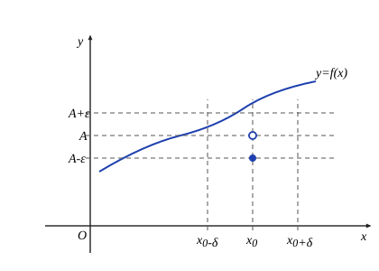
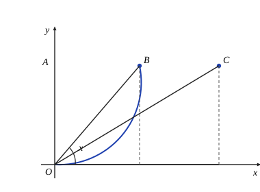
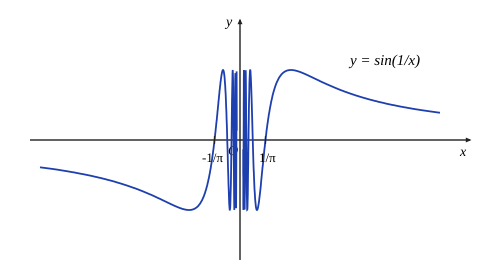
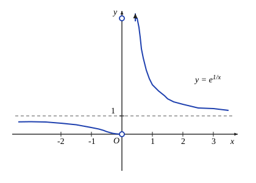
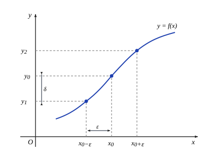

第三章 函数极限与连续函数
第三章 函数极限与连续函数
§1 函数极限
函数极限的定义
我们在第二章讨论了数列的极限，现在来讨论另一类极限，即函数的极限. 设 $y = f(x)$ 是一给定的函数，我们考虑这样的问题：当自变量趋于某个点 $x_0$ 时，因变量 $y$ 是否相应地趋于某个定值 $A$.
先看一个例子. 在半径为 $r$ 的圆上任取一小段圆弧，记它所对的圆心角的弧度为 $2x$，则圆弧长度为 $2xr$，而圆弧所对的弦的长度为 $2r\sin x$，弦长与弧长之比值 $y$ 是 $x$ 的函数，其关系式为
$$y = \frac{\sin x}{x}.$$现问当 $x$ 趋于 $0$ 时，$y$ 是否趋于某个固定值？
如果我们分别取 $x$ 为 $0.5, 0.1, 0.05, 0.01, \dots$，可求出 $y$ 的相应值分别为 $0.96, 0.998, 0.999\,6, 0.999\,8, \dots$. 可以看出，随着 $x$ 越来越接近于 $0$，$y = \frac{\sin x}{x}$ 的值也越来越接近于 $1$. 因此我们有理由猜测，当 $x$ 趋于 $0$ 时，$y = \frac{\sin x}{x}$ 趋于 $1$，并记为
$$\lim_{x \to 0} \frac{\sin x}{x} = 1.$$后面我们将对这一极限给出严格证明.
必须注意，在 $x$ 趋于 $0$ 的过程中，我们不取 $x = 0$（事实上，当 $x = 0$ 时，函数 $y = \frac{\sin x}{x}$ 没有意义）. 我们当前关心的是在 $x$ 趋于 $0$ 的过程中，函数 $y = \frac{\sin x}{x}$ 的变化趋势，而对函数在 $x = 0$ 处是否有意义，以及如果有意义的话取值为多少之类的问题，暂时我们都不感兴趣.
下面我们给出函数极限的严格定义：
定义 3.1.1 设函数 $y = f(x)$ 在点 $x_0$ 的某个去心邻域中有定义，即存在 $\rho > 0$，使得 $O^\circ(x_0, \rho) \subset D(f)$. 如果存在实数 $A$，对于任意给定的 $\varepsilon > 0$，可以找到 $\delta > 0$，使得当 $0 < |x - x_0| < \delta$ 时，成立
$$|f(x) - A| < \varepsilon,$$则称 $A$ 是函数 $f(x)$ 在点 $x_0$ 的极限，记为
$$\lim_{x \to x_0} f(x) = A \quad \text{或} \quad f(x) \to A \ (x \to x_0).$$如果不存在具有上述性质的实数 $A$，则称函数 $f(x)$ 在点 $x_0$ 的极限不存在.
图 3.1.1 表示了这个定义的几何意义. 在平面直角坐标系 $Oxy$ 的 $y$ 轴上取以 $A$ 为中心，$\varepsilon$ 为半径的一个开区间 $(A - \varepsilon, A + \varepsilon)$，即 $A$ 点的 $\varepsilon$ 邻域 $O(A, \varepsilon)$；在 $x$ 轴上存在一个以 $x_0$ 为中心，$\delta$ 为半径的开区间 $(x_0 - \delta, x_0 + \delta)$，即 $x_0$ 点的 $\delta$ 邻域 $O(x_0, \delta)$，“当 $0 < |x - x_0| < \delta$ 时，成立 $|f(x) - A| < \varepsilon$” 表示 $O^\circ(x_0, \delta)$ 中除 $x_0$ 之外的所有点的函数值都落在点 $A$ 的 $\varepsilon$ 邻域中.

跟数列极限的情况类似，$\varepsilon$ 既是任意的，又是给定的. 一方面，只有当 $\varepsilon$ 给定时，才能确定正数 $\delta$（$\delta$ 是由 $\varepsilon$ 决定的）；另一方面，由于 $\varepsilon$ 具有任意性，也就是说图 3.1.1 中上下两条横线的距离可以任意收缩. 但无论收缩得多小，都能找到正数 $\delta$，使得当 $x$ 处于 $x_0$ 的 $\delta$ 去心邻域时，$f(x)$ 落在由这两条线界定的范围中，将这两方面结合起来，就不难理解，$A$ 必为 $x \to x_0$ 时 $f(x)$ 的极限值（如图 3.1.1）.
上述函数极限的定义可利用符号表述为：
$$\lim_{x \to x_0} f(x) = A \iff \forall \varepsilon > 0, \exists \delta > 0, \forall x (0 < |x - x_0| < \delta) : |f(x) - A| < \varepsilon.$$例 3.1.1 证明 $\lim_{x \to 0} e^x = 1$.
证 按极限定义，$\forall \varepsilon > 0$（不妨设 $0 < \varepsilon < 1$），要找 $\delta > 0$，使得当 $0 < |x| < \delta$ 时，成立
$$|e^x - 1| < \varepsilon.$$由于上式等价于
$$\ln(1 - \varepsilon) < x < \ln(1 + \varepsilon),$$于是我们取 $\delta = \min\{\ln(1 + \varepsilon), -\ln(1 - \varepsilon)\} > 0$，当 $x$ 满足 $0 < |x| < \delta$ 时，显然成立
$$|e^x - 1| < \varepsilon.$$从而证得 $\lim_{x \to 0} e^x = 1$.
证毕同样，对任意给定的 $\varepsilon > 0$，正数 $\delta$ 并不要求取最大的或最佳的值，所以对具体的函数极限问题，常常采用与数列极限证明时类似的适度放大技巧.
例 3.1.2 证明 $\lim_{x \to 2} x^2 = 4$.
证 按极限的定义，对任意给定的 $\varepsilon > 0$，要找 $\delta > 0$，使当 $0 < |x - 2| < \delta$ 时成立
$$|x^2 - 4| < \varepsilon.$$因为 $|x^2 - 4| = |x - 2| \cdot |x + 2|$，我们保留因子 $|x - 2|$，而将因子 $|x + 2|$ 放大，为此加上条件
$$|x - 2| < 1, \quad \text{即 } 1 < x < 3,$$于是 $|x + 2| < 5$，从而有
$$|x^2 - 4| < 5|x - 2|.$$取 $\delta = \min\{1, \frac{\varepsilon}{5}\}$，当 $0 < |x - 2| < \delta$ 时，成立
$$|x^2 - 4| = |x + 2| \cdot |x - 2| < 5 \cdot \frac{\varepsilon}{5} = \varepsilon,$$从而证得 $\lim_{x \to 2} x^2 = 4$.
证毕例 3.1.3 证明 $\lim_{x \to 1} \frac{x(x - 1)}{x^2 - 1} = \frac{1}{2}$.
证 因为
$$\left| \frac{x(x - 1)}{x^2 - 1} - \frac{1}{2} \right| = \left| \frac{x}{x + 1} - \frac{1}{2} \right| = \frac{|x - 1|}{2|x + 1|},$$我们保留因子 $|x - 1|$，而将因子 $\frac{1}{2|x + 1|}$ 放大. 为此，加上条件
$$0 < |x - 1| < 1, \quad \text{即 } 0 < x < 2,$$于是有
$$\frac{1}{2|x + 1|} < \frac{1}{2}.$$取 $\delta = \min\{1, 2\varepsilon\}$，当 $0 < |x - 1| < \delta$ 时，成立
$$\left| \frac{x(x - 1)}{x^2 - 1} - \frac{1}{2} \right| = \frac{|x - 1|}{2|x + 1|} < \frac{1}{2} \cdot 2\varepsilon = \varepsilon,$$从而证得 $\lim_{x \to 1} \frac{x(x - 1)}{x^2 - 1} = \frac{1}{2}$.
证毕函数极限的性质
函数极限的许多性质及其证明方法都与数列极限有类似之处，请读者仔细领会，统一掌握，并注意区别它们不同的地方.
（1）极限的唯一性
定理 3.1.1 设 $A$ 与 $B$ 都是函数 $f(x)$ 在点 $x_0$ 的极限，则 $A = B$.
证 根据函数极限的定义，可知：
$$\forall \varepsilon > 0, \exists \delta_1 > 0, \forall x (0 < |x - x_0| < \delta_1) : |f(x) - A| < \frac{\varepsilon}{2};$$ $$\exists \delta_2 > 0, \forall x (0 < |x - x_0| < \delta_2) : |f(x) - B| < \frac{\varepsilon}{2}.$$取 $\delta = \min\{\delta_1, \delta_2\}$，当 $0 < |x - x_0| < \delta$ 时，
$$|A - B| \le |f(x) - A| + |f(x) - B| < \frac{\varepsilon}{2} + \frac{\varepsilon}{2} = \varepsilon.$$由于 $\varepsilon$ 可以任意接近于 $0$，可知 $A = B$.
证毕（2）局部保序性
定理 3.1.2 若 $\lim_{x \to x_0} f(x) = A, \lim_{x \to x_0} g(x) = B$，且 $A > B$，则存在 $\delta > 0$，当 $0 < |x - x_0| < \delta$ 时，成立
$$f(x) > g(x).$$证 取 $\varepsilon_0 = \frac{A - B}{2} > 0$. 由 $\lim_{x \to x_0} f(x) = A$，$\exists \delta_1 > 0, \forall x (0 < |x - x_0| < \delta_1)$：
$$f(x) > A - \varepsilon_0 = \frac{A + B}{2}.$$由 $\lim_{x \to x_0} g(x) = B$，$\exists \delta_2 > 0, \forall x (0 < |x - x_0| < \delta_2)$：
$$g(x) < B + \varepsilon_0 = \frac{A + B}{2}.$$取 $\delta = \min\{\delta_1, \delta_2\}$，当 $0 < |x - x_0| < \delta$ 时，成立
$$g(x) < \frac{A + B}{2} < f(x).$$ 证毕推论 1 若 $\lim_{x \to x_0} f(x) = A \ne 0$，则存在 $\delta > 0$，当 $0 < |x - x_0| < \delta$ 时，成立
$$|f(x)| > \frac{|A|}{2}.$$证 由 $\frac{|A|}{2} < |A|$ 及定理 3.1.2，可知存在 $\delta > 0$，当 $0 < |x - x_0| < \delta$ 时，成立
$$|f(x)| > \frac{|A|}{2}.$$ 证毕推论 2 若 $\lim_{x \to x_0} f(x) = A, \lim_{x \to x_0} g(x) = B$，且存在 $r > 0$，使得当 $0 < |x - x_0| < r$ 时，成立 $g(x) \le f(x)$，则
$$B \le A.$$证 运用反证法. 若 $B > A$，则由定理 3.1.2，存在 $\delta > 0$，当 $0 < |x - x_0| < \min\{\delta, r\}$ 时，
$$g(x) > f(x),$$矛盾.
证毕注意 即使将推论 2 的条件加强到当 $0 < |x - x_0| < r$ 时，成立 $g(x) < f(x)$，我们也只能得到 $B \le A$ 的结论，而不能得到 $B < A$ 的结论，请读者自己举出例子.
推论 3（局部有界性） 若 $\lim_{x \to x_0} f(x) = A$，则存在 $\delta > 0$，使得 $f(x)$ 在 $O^\circ(x_0, \delta)$ 中有界.
证（推论 3） 取常数 $M$ 与 $m$，满足 $m < A < M$，令 $g(x) = m, h(x) = M$ 为两个常数函数，由定理 3.1.2 可知存在 $\delta > 0$，当 $0 < |x - x_0| < \delta$ 时，成立
$$m \le f(x) \le M.$$ 证毕顺便指出，如果 $f(x)$ 在 $x_0$ 有定义，我们可以取
$$G = \max\{|m|, |M|, |f(x_0)|\},$$则当 $|x - x_0| < \delta$ 时，成立
$$|f(x)| \le G.$$请读者注意，在推论 3 中，“有界”只是局部性的. 例如，函数 $f(x) = \frac{1}{x}$ 在点 $x_0 = 1$ 的去心邻域 $O^\circ(1, \frac{1}{2})$ 中是有界的，但 $f(x)$ 在集合 $\{x \mid 0 < |x| < 1\}$ 上是无界的.
（3）夹逼性
定理 3.1.3 若存在 $r > 0$，使得当 $0 < |x - x_0| < r$ 时，成立
$$g(x) \le f(x) \le h(x),$$且 $\lim_{x \to x_0} g(x) = \lim_{x \to x_0} h(x) = A$，则 $\lim_{x \to x_0} f(x) = A$.
证 由 $\lim_{x \to x_0} h(x) = A$，对 $\forall \varepsilon > 0$，$\exists \delta_1 > 0$，使得当 $0 < |x - x_0| < \delta_1$ 时，成立
$$h(x) < A + \varepsilon;$$由 $\lim_{x \to x_0} g(x) = A$，对上述 $\varepsilon > 0$，$\exists \delta_2 > 0$，使得当 $0 < |x - x_0| < \delta_2$ 时，成立
$$A - \varepsilon < g(x).$$取 $\delta = \min\{\delta_1, \delta_2, r\}$，当 $0 < |x - x_0| < \delta$ 时，成立
$$A - \varepsilon < g(x) \le f(x) \le h(x) < A + \varepsilon,$$此即 $\lim_{x \to x_0} f(x) = A$.
证毕例 3.1.4 证明：
$$\lim_{x \to 0} \frac{\sin x}{x} = 1.$$证（如图 3.1.2）设 $\angle AOB$ 的弧度为 $x$，$0 < x < \frac{\pi}{2}$，由于
$$\triangle OAB \text{ 面积} < \text{扇形 } OAB \text{ 面积} < \triangle OBC \text{ 面积},$$可以得到（见例 2.4.5 的注）
$$\sin x < x < \tan x,$$
从而有
$$\cos x < \frac{\sin x}{x} < 1.$$显然上式对于 $-\frac{\pi}{2} < x < 0$ 也成立.
由于
$$|1 - \cos x| = 2\sin^2\frac{x}{2} < 2\left(\frac{x}{2}\right)^2 = \frac{x^2}{2},$$可知 $\lim_{x \to 0} \cos x = 1$. 应用极限的夹逼性，得到
$$\lim_{x \to 0} \frac{\sin x}{x} = 1.$$ 证毕注 此极限亦可由例 2.4.5 的结果
$$\lim_{n \to \infty} \frac{\sin(\pi/n)}{\pi/n} = 1$$直接导出：对任意 $x \in (-\frac{\pi}{2}, \frac{\pi}{2}) \setminus \{0\}$，一定存在正整数 $n$，满足
$$\frac{\pi}{n + 1} < |x| \le \frac{\pi}{n},$$由此得到
$$\cos\frac{\pi}{n} < \cos x < \frac{\sin x}{x} < \frac{\sin(\pi/(n+1))}{\pi/(n+1)} \cdot \frac{n + 1}{n}.$$当 $x \to 0$ 时有 $n \to \infty$，利用极限的夹逼性，即有
$$\lim_{x \to 0} \frac{\sin x}{x} = 1.$$函数极限的四则运算
定理 3.1.4 设 $\lim_{x \to x_0} f(x) = A, \lim_{x \to x_0} g(x) = B$，则
(1) $\lim_{x \to x_0} (\alpha f(x) + \beta g(x)) = \alpha A + \beta B$（$\alpha, \beta$ 是常数）；
(2) $\lim_{x \to x_0} (f(x)g(x)) = AB$；
(3) $\lim_{x \to x_0} \frac{f(x)}{g(x)} = \frac{A}{B}$（$B \ne 0$）.
证 根据定理 3.1.2 的推论 3，可知存在 $M > 0$ 及 $\delta' > 0$，使得当 $0 < |x - x_0| < \delta'$ 时，
$$|f(x)| \le M,$$且 $\forall \varepsilon > 0, \exists \delta_1 > 0, \forall x (0 < |x - x_0| < \delta_1)$：
$$|f(x) - A| < \varepsilon;$$再由 $\lim_{x \to x_0} g(x) = B$ 可知，$\exists \delta_2 > 0, \forall x (0 < |x - x_0| < \delta_2)$：
$$|g(x) - B| < \varepsilon.$$取 $\delta = \min\{\delta', \delta_1, \delta_2\}$，当 $0 < |x - x_0| < \delta$ 时，成立
$$|(\alpha f(x) + \beta g(x)) - (\alpha A + \beta B)| \le |\alpha| \cdot |f(x) - A| + |\beta| \cdot |g(x) - B| < (|\alpha| + |\beta|)\varepsilon;$$及
$$|f(x)g(x) - AB| = |f(x)(g(x) - B) + B(f(x) - A)| \le |f(x)| \cdot |g(x) - B| + |B| \cdot |f(x) - A| < (M + |B|)\varepsilon,$$因此 (1) 和 (2) 成立.
利用定理 3.1.2 的推论 1，可知 $\exists \delta_3 > 0, \forall x (0 < |x - x_0| < \delta_3)$：
$$|g(x)| > \frac{|B|}{2}.$$取 $\delta = \min\{\delta_1, \delta_2, \delta_3\}$，当 $0 < |x - x_0| < \delta$ 时，成立
$$\left| \frac{f(x)}{g(x)} - \frac{A}{B} \right| = \frac{|B(f(x) - A) - A(g(x) - B)|}{|B g(x)|} \le \frac{2(|B| \cdot |f(x) - A| + |A| \cdot |g(x) - B|)}{|B|^2} < \frac{2(|A| + |B|)}{|B|^2}\varepsilon,$$因此 (3) 也成立.
证毕例 3.1.5 对于任意实数 $\alpha \ne 0$，有
$$\lim_{x \to 0} \frac{\sin \alpha x}{x} = \lim_{x \to 0} \alpha \frac{\sin \alpha x}{\alpha x} = \alpha;$$对于任意实数 $\alpha, \beta \ne 0$，则有
$$\lim_{x \to 0} \frac{\sin \alpha x}{\sin \beta x} = \lim_{x \to 0} \frac{\frac{\sin \alpha x}{x}}{\frac{\sin \beta x}{x}} = \frac{\alpha}{\beta}.$$函数极限与数列极限的关系
定理 3.1.5（Heine 定理） $\lim_{x \to x_0} f(x) = A$ 的充分必要条件是：对于任意满足条件 $\lim_{n \to \infty} x_n = x_0$ 且 $x_n \ne x_0$ ($n = 1, 2, 3, \dots$) 的数列 $\{x_n\}$，相应的函数值数列 $\{f(x_n)\}$ 成立
$$\lim_{n \to \infty} f(x_n) = A.$$证 必要性：由 $\lim_{x \to x_0} f(x) = A$ 可知，$\forall \varepsilon > 0, \exists \delta > 0$，当 $0 < |x - x_0| < \delta$ 时，$|f(x) - A| < \varepsilon$. 因为 $\lim_{n \to \infty} x_n = x_0$，且 $x_n \ne x_0$ ($n = 1, 2, 3, \dots$)，对于上述 $\delta > 0, \exists N, \forall n > N$：
$$0 < |x_n - x_0| < \delta.$$于是当 $n > N$ 时，成立
$$|f(x_n) - A| < \varepsilon,$$即 $\lim_{n \to \infty} f(x_n) = A$.
充分性：用反证法.
按函数极限定义，命题“$f(x)$ 在 $x_0$ 点以 $A$ 为极限”可以表述为
$$\forall \varepsilon > 0, \exists \delta > 0, \forall x (0 < |x - x_0| < \delta) : |f(x) - A| < \varepsilon.$$于是它的否定命题“$f(x)$ 在 $x_0$ 点不以 $A$ 为极限”可以对偶地表述为
$$\exists \varepsilon_0 > 0, \forall \delta > 0, \exists x (0 < |x - x_0| < \delta) : |f(x) - A| \ge \varepsilon_0.$$也就是说，存在某个固定正数 $\varepsilon_0$，不管 $\delta$ 取得多么小，总能在 $O^\circ(x_0, \delta)$ 中找到一个 $x$，使 $f(x)$ 与 $A$ 的差的绝对值不小于 $\varepsilon_0$，即 $|f(x) - A| \ge \varepsilon_0$.
现在取一列 $\{\delta_n\}$，$\delta_n = \frac{1}{n}$ ($n = 1, 2, 3, \dots$). 对 $\delta_1 = 1$，存在 $x_1$ ($0 < |x_1 - x_0| < \delta_1$)，使 $|f(x_1) - A| \ge \varepsilon_0$；对 $\delta_2 = \frac{1}{2}$，存在 $x_2$ ($0 < |x_2 - x_0| < \delta_2$)，使 $|f(x_2) - A| \ge \varepsilon_0$；$\dots$ 对 $\delta_n = \frac{1}{n}$，存在 $x_n$ ($0 < |x_n - x_0| < \delta_n$)，使 $|f(x_n) - A| \ge \varepsilon_0$.
于是得到数列 $\{x_n\}$，满足 $x_n \ne x_0, \lim_{n \to \infty} x_n = x_0$，但相应的函数值数列 $\{f(x_n)\}$ 不可能以 $A$ 为极限. 这与定理条件相矛盾.
由此推翻假定，得到 $f(x)$ 在 $x_0$ 点以 $A$ 为极限.
证毕这一性质被经常用于证明某个函数极限的不存在性.
例 3.1.6 证明 $\sin\frac{1}{x}$ 在 $x = 0$ 没有极限.
证 取两个数列
$$x_n^{(1)} = \frac{1}{n\pi} \ (n = 1, 2, 3, \dots); \quad x_n^{(2)} = \frac{1}{2n\pi + \frac{\pi}{2}} \ (n = 1, 2, 3, \dots).$$则显然有 $x_n^{(1)} \ne 0, \lim_{n \to \infty} x_n^{(1)} = 0$ 与 $x_n^{(2)} \ne 0, \lim_{n \to \infty} x_n^{(2)} = 0$. 但由于
$$\lim_{n \to \infty} \sin\frac{1}{x_n^{(1)}} = 0, \quad \text{而} \quad \lim_{n \to \infty} \sin\frac{1}{x_n^{(2)}} = 1,$$根据定理 3.1.5，可知 $\sin\frac{1}{x}$ 在 $x = 0$ 没有极限（如图 3.1.3）.

注 如果我们只关心函数 $f(x)$ 在点 $x_0$ 的极限是否存在，而不管极限值是多少，则定理 3.1.5 有下述另一种表述：
定理 3.1.5' $\lim_{x \to x_0} f(x)$ 存在的充分必要条件是：对于任意满足条件 $\lim_{n \to \infty} x_n = x_0$ 且 $x_n \ne x_0$ ($n = 1, 2, 3, \dots$) 的数列 $\{x_n\}$，相应的函数值数列 $\{f(x_n)\}$ 收敛.
对于定理 3.1.5' 充分性的证明，只要注意这样一个事实：若存在数列 $\{x_n'\}$ 与 $\{x_n''\}$，使得 $\lim_{n \to \infty} f(x_n') = A, \lim_{n \to \infty} f(x_n'') = B$，且 $A \ne B$，构造混合数列 $x_{2n-1} = x_n', x_{2n} = x_n''$ ($n = 1, 2, 3, \dots$)，显然 $x_n \ne x_0, \lim_{n \to \infty} x_n = x_0$，但是相应的函数值数列 $\{f(x_n)\}$ 必定不收敛.
单侧极限
在函数极限 $\lim_{x \to x_0} f(x) = A$ 的定义中，自变量 $x$ 可以按任意的方式趋于 $x_0$（只要 $x \ne x_0$）. 但有时候，$f(x)$ 只在 $x_0$ 的一侧（左侧或右侧）有定义，或者需要分别研究 $f(x)$ 在 $x_0$ 两侧的性态，这就有必要引入单侧极限的概念.
定义 3.1.2 设 $f(x)$ 在 $(x_0 - \rho, x_0)$ 有定义（$\rho > 0$）. 如果存在实数 $B$，对于任意给定的 $\varepsilon > 0$，可以找到 $\delta > 0$，使得当 $-\delta < x - x_0 < 0$ 时，成立
$$|f(x) - B| < \varepsilon,$$则称 $B$ 是函数 $f(x)$ 在点 $x_0$ 的左极限，记为
$$\lim_{x \to x_0^-} f(x) = f(x_0^-) = B.$$类似地，如果 $f(x)$ 在 $(x_0, x_0 + \rho)$ 有定义（$\rho > 0$），并且存在实数 $C$，对于任意给定的 $\varepsilon > 0$，可以找到 $\delta > 0$，使得当 $0 < x - x_0 < \delta$ 时，成立
$$|f(x) - C| < \varepsilon,$$则称 $C$ 是函数 $f(x)$ 在点 $x_0$ 的右极限，记为
$$\lim_{x \to x_0^+} f(x) = f(x_0^+) = C.$$显然，函数 $f(x)$ 在 $x_0$ 极限存在的充分必要条件是 $f(x)$ 在 $x_0$ 的左极限与右极限存在并且相等：
$$\lim_{x \to x_0} f(x) = A \iff \lim_{x \to x_0^-} f(x) = \lim_{x \to x_0^+} f(x) = A.$$例 3.1.7 符号函数 $\operatorname{sgn} x$（见 §1.2）在原点的单侧极限存在但不相等：
$$\lim_{x \to 0^-} \operatorname{sgn} x = -1, \quad \lim_{x \to 0^+} \operatorname{sgn} x = 1,$$因此符号函数在 $x = 0$ 处没有极限.
例 3.1.8 设
$$f(x) = \begin{cases} \frac{\sin 2x}{x}, & x < 0, \\ 2\cos x, & x \ge 0. \end{cases}$$问当 $x$ 趋于 $0$ 时，$f(x)$ 的极限是否存在？
解 由于
$$\lim_{x \to 0^-} f(x) = \lim_{x \to 0^-} \frac{\sin 2x}{x} = 2,$$ $$\lim_{x \to 0^+} f(x) = \lim_{x \to 0^+} 2\cos x = 2,$$因此当 $x$ 趋于 $0$ 时，$f(x)$ 的极限存在，且 $\lim_{x \to 0} f(x) = 2$.
函数极限定义的扩充
在本节中，函数极限是对 $\lim_{x \to x_0} f(x) = A$ 定义的，表述为
$$\forall \varepsilon > 0, \exists \delta > 0, \forall x (0 < |x - x_0| < \delta) : |f(x) - A| < \varepsilon,$$其中 $x_0, A$ 都是有限实数.
但实际上，自变量的极限过程有六种情况：$x \to x_0, x \to x_0^+, x \to x_0^-, x \to \infty, x \to +\infty, x \to -\infty$，函数值的极限有四种情况：$f(x) \to A, f(x) \to \infty, f(x) \to +\infty, f(x) \to -\infty$. 仔细分析一下 $\lim_{x \to x_0} f(x) = A$ 的定义，可以发现定义包含了两个方面：“$\forall \varepsilon > 0, \dots : |f(x) - A| < \varepsilon$” 描述的是函数值的极限情况 “$f(x) \to A$”；而 “$\dots, \exists \delta > 0, \forall x (0 < |x - x_0| < \delta) : \dots$” 描述的是自变量的极限过程 “$x \to x_0$”. 而对于上述四种函数值的极限情况和六种自变量的极限过程，分别有相应的表述方式：
“$f(x) \to A$（有限数）”：
“$\forall \varepsilon > 0, \dots : |f(x) - A| < \varepsilon$”；
“$f(x) \to \infty$”：
“$\forall G > 0, \dots : |f(x)| > G$”；
“$f(x) \to +\infty$”：
“$\forall G > 0, \dots : f(x) > G$”；
“$\forall G > 0, \dots : f(x) < -G$”；
以及
“$x \to x_0$”：
“$\dots, \exists \delta > 0, \forall x (0 < |x - x_0| < \delta) : \dots$”；
“$x \to x_0^+$”：
“$\dots, \exists \delta > 0, \forall x (0 < x - x_0 < \delta) : \dots$”；
“$x \to x_0^-$”：
“$\dots, \exists \delta > 0, \forall x (-\delta < x - x_0 < 0) : \dots$”；
“$x \to \infty$”：
“$\dots, \exists X > 0, \forall x (|x| > X) : \dots$”；
“$x \to +\infty$”：
“$\dots, \exists X > 0, \forall x (x > X) : \dots$”；
“$x \to -\infty$”：
“$\dots, \exists X > 0, \forall x (x < -X) : \dots$”.
理解了这一点，读者就不难举一反三，对任何一种函数极限立即写出相应的定义. 例如：
$\lim_{x \to x_0} f(x) = \infty$ 的定义为：
$$\forall G > 0, \exists \delta > 0, \forall x (0 < |x - x_0| < \delta) : |f(x)| > G;$$$\lim_{x \to +\infty} f(x) = A$ 的定义为：
$$\forall \varepsilon > 0, \exists X > 0, \forall x (x > X) : |f(x) - A| < \varepsilon;$$$\lim_{x \to -\infty} f(x) = +\infty$ 的定义为：
$$\forall G > 0, \exists X > 0, \forall x (x < -X) : f(x) > G.$$例 3.1.9 证明 $\lim_{x \to -\infty} e^x = 0$.
证 对于任意给定的 $\varepsilon \in (0, 1)$，取 $X = \ln\frac{1}{\varepsilon} > 0$，当 $x < -X$ 时成立
$$0 < e^x < e^{-X} = \varepsilon,$$于是得到 $\lim_{x \to -\infty} e^x = 0$.
证毕例 3.1.10 证明 $\lim_{x \to 1^-} \frac{x}{x - 1} = -\infty$.
证 对于任意给定的 $G > 0$，要找 $\delta > 0$，使当 $-\delta < x - 1 < 0$ 时成立
$$\frac{x}{x - 1} < -G.$$为了适度放大不等式的左边，先加上条件 $-\frac{1}{2} < x - 1 < 0$，即 $\frac{1}{2} < x < 1$，从而
$$\frac{x}{x - 1} < \frac{1/2}{x - 1}.$$为了使 $\frac{1/2}{x - 1} < -G$，只要 $x - 1 > -\frac{1}{2G}$. 现取 $\delta = \min\{\frac{1}{2}, \frac{1}{2G}\}$，则当 $-\delta < x - 1 < 0$ 时，成立
$$\frac{x}{x - 1} < \frac{1/2}{x - 1} < -G,$$由此证得 $\lim_{x \to 1^-} \frac{x}{x - 1} = -\infty$.
证毕例 3.1.11 容易证明 $\lim_{x \to -\infty} e^x = 0, \lim_{x \to +\infty} e^x = +\infty$. 令 $y = \frac{1}{x}$，可知函数 $f(x) = e^{1/x}$（如图 3.1.4）在 $x = 0$ 的左极限存在，且 $\lim_{x \to 0^-} e^{1/x} = 0$；而当 $x \to 0^+$ 时，函数 $f(x)$ 趋于 $+\infty$，即 $\lim_{x \to 0^+} e^{1/x} = +\infty$.

对于上述扩充了定义的函数极限，可以参照本节前半部分讨论其函数极限的性质、函数极限的四则运算以及函数极限与数列极限的关系，我们不一一作叙述了. 请读者自己加以推导，并注意以下几点说明：
(1) 关于函数极限的性质，例如局部保序定理与夹逼性定理，只当函数极限 $A$ 为有限数、$+\infty$ 与 $-\infty$ 时才是成立的. 也就是说，讨论这些定理，须排除 $A$ 是未定号无穷大 $\infty$ 的情况. 这是因为我们无法将 $\infty$ 与任意有限数作大小的比较，而对于定号无穷大 $+\infty$ 或 $-\infty$，我们可以认为不等式 $-\infty < A < +\infty$（$A$ 为任意实数）成立.
(2) 关于函数极限的四则运算，只要不是待定型，如 $\infty \pm \infty, (+\infty) - (+\infty), (+\infty) + (-\infty), 0 \cdot \infty, \frac{0}{0}, \frac{\infty}{\infty}$ 等，定理 3.1.4 总是成立的. 如果出现待定型，则需要对具体的函数极限作具体的讨论.
(3) 对于这些不同的函数极限，分别有相应的 Heine 定理，它们的叙述、证明方法和作用都是类似的.
例 3.1.12 讨论极限
$$L = \lim_{x \to \infty} \frac{a_n x^n + a_{n-1} x^{n-1} + \dots + a_k x^k}{b_m x^m + b_{m-1} x^{m-1} + \dots + b_j x^j} \quad (a_n \ne 0, b_m \ne 0, a_k \ne 0, b_j \ne 0)$$与
$$l = \lim_{x \to 0} \frac{a_n x^n + a_{n-1} x^{n-1} + \dots + a_k x^k}{b_m x^m + b_{m-1} x^{m-1} + \dots + b_j x^j}.$$解 (1) $x \to \infty$ 情形.
当 $n = m$ 时，
$$L = \lim_{x \to \infty} \frac{a_n + \frac{a_{n-1}}{x} + \dots + \frac{a_k}{x^{n-k}}}{b_n + \frac{b_{n-1}}{x} + \dots + \frac{b_j}{x^{n-j}}} = \frac{a_n}{b_n};$$当 $n < m$ 时，
$$L = \lim_{x \to \infty} \left( \frac{1}{x^{m-n}} \cdot \frac{a_n + \frac{a_{n-1}}{x} + \dots + \frac{a_k}{x^{n-k}}}{b_m + \frac{b_{m-1}}{x} + \dots + \frac{b_j}{x^{m-j}}} \right) = 0;$$当 $n > m$ 时，
$$L = \lim_{x \to \infty} \left( x^{n-m} \cdot \frac{a_n + \frac{a_{n-1}}{x} + \dots + \frac{a_k}{x^{n-k}}}{b_m + \frac{b_{m-1}}{x} + \dots + \frac{b_j}{x^{m-j}}} \right) = \infty.$$(2) $x \to 0$ 情形.
当 $k = j$ 时，
$$l = \lim_{x \to 0} \frac{a_n x^{n-k} + a_{n-1} x^{n-k-1} + \dots + a_k}{b_m x^{m-k} + b_{m-1} x^{m-k-1} + \dots + b_k} = \frac{a_k}{b_k};$$当 $k > j$ 时，
$$l = \lim_{x \to 0} \left( x^{k-j} \cdot \frac{a_n x^{n-k} + a_{n-1} x^{n-k-1} + \dots + a_k}{b_m x^{m-j} + b_{m-1} x^{m-j-1} + \dots + b_j} \right) = 0;$$当 $k < j$ 时，
$$l = \lim_{x \to 0} \left( \frac{1}{x^{j-k}} \cdot \frac{a_n x^{n-k} + a_{n-1} x^{n-k-1} + \dots + a_k}{b_m x^{m-j} + b_{m-1} x^{m-j-1} + \dots + b_j} \right) = \infty.$$所以
$$L = \lim_{x \to \infty} \frac{a_n x^n + a_{n-1} x^{n-1} + \dots + a_k x^k}{b_m x^m + b_{m-1} x^{m-1} + \dots + b_j x^j} = \begin{cases} \frac{a_n}{b_n}, & n = m, \\ 0, & n < m, \\ \infty, & n > m; \end{cases}$$ $$l = \lim_{x \to 0} \frac{a_n x^n + a_{n-1} x^{n-1} + \dots + a_k x^k}{b_m x^m + b_{m-1} x^{m-1} + \dots + b_j x^j} = \begin{cases} \frac{a_k}{b_k}, & k = j, \\ 0, & k > j, \\ \infty, & k < j. \end{cases}$$例 3.1.13 证明
$$\lim_{x \to \infty} \left( 1 + \frac{1}{x} \right)^x = e.$$证 先证 $\lim_{x \to +\infty} (1 + \frac{1}{x})^x = e$. 首先，对于任意 $x \ge 1$，有
$$\left( 1 + \frac{1}{[x] + 1} \right)^{[x]} \le \left( 1 + \frac{1}{x} \right)^x \le \left( 1 + \frac{1}{[x]} \right)^{[x] + 1},$$其中 $[x]$ 表示 $x$ 的整数部分. 当 $x \to +\infty$ 时，不等式左、右两侧表现为两个数列极限：
$$\lim_{n \to \infty} \left( 1 + \frac{1}{n + 1} \right)^n = \lim_{n \to \infty} \frac{(1 + \frac{1}{n + 1})^{n+1}}{1 + \frac{1}{n + 1}} = e,$$ $$\lim_{n \to \infty} \left( 1 + \frac{1}{n} \right)^{n+1} = \lim_{n \to \infty} \left( 1 + \frac{1}{n} \right)^n \left( 1 + \frac{1}{n} \right) = e.$$利用函数极限的夹逼性，得到
$$\lim_{x \to +\infty} \left( 1 + \frac{1}{x} \right)^x = e.$$再证 $\lim_{x \to -\infty} (1 + \frac{1}{x})^x = e$. 令 $x = -(t + 1)$，当 $x \to -\infty$ 时有 $t \to +\infty$，于是
$$\lim_{x \to -\infty} \left( 1 + \frac{1}{x} \right)^x = \lim_{t \to +\infty} \left( 1 - \frac{1}{t + 1} \right)^{-(t+1)} = \lim_{t \to +\infty} \left( \frac{t + 1}{t} \right)^{t+1} = \lim_{t \to +\infty} \left( 1 + \frac{1}{t} \right)^t \left( 1 + \frac{1}{t} \right) = e.$$将 $\lim_{x \to +\infty} (1 + \frac{1}{x})^x = e$ 与 $\lim_{x \to -\infty} (1 + \frac{1}{x})^x = e$ 结合起来，就得到
$$\lim_{x \to \infty} \left( 1 + \frac{1}{x} \right)^x = e.$$ 证毕注 例 3.1.13 的证明中包含下述结果：
$$\lim_{x \to \infty} \left( 1 - \frac{1}{x} \right)^x = \frac{1}{e}.$$在 §2.4 中讲述了数列收敛的 Cauchy 收敛原理. 对于本节中最后所讨论的各类函数极限情况，同样也分别有相应的 Cauchy 收敛原理，而在证明中需要用到相应的 Heine 定理，下面仅举一例.
定理 3.1.6 函数极限 $\lim_{x \to +\infty} f(x)$ 存在而且有限的充分必要条件是：对于任意给定的 $\varepsilon > 0$，存在 $X > 0$，使得对一切 $x', x'' > X$，成立
$$|f(x') - f(x'')| < \varepsilon.$$证 必要性：设 $\lim_{x \to +\infty} f(x) = A$，按照定义，$\forall \varepsilon > 0, \exists X > 0, \forall x > X$：
$$|f(x) - A| < \frac{\varepsilon}{2}.$$于是对一切 $x', x'' > X$，有
$$|f(x') - f(x'')| \le |f(x') - A| + |f(x'') - A| < \frac{\varepsilon}{2} + \frac{\varepsilon}{2} = \varepsilon.$$充分性：设 $\forall \varepsilon > 0, \exists X > 0, \forall x', x'' > X$：
$$|f(x') - f(x'')| < \varepsilon.$$任意选取数列 $\{x_n\}$，$\lim_{n \to \infty} x_n = +\infty$，则对上述 $X > 0, \exists N, \forall n > N : x_n > X$. 于是当 $m > n > N$ 时，成立
$$|f(x_n) - f(x_m)| < \varepsilon.$$这说明函数值数列 $\{f(x_n)\}$ 是基本数列，因而必定收敛. 根据相应的 Heine 定理，可知 $\lim_{x \to +\infty} f(x)$ 存在而且有限.
证毕请读者写出函数极限 $\lim_{x \to x_0} f(x), \lim_{x \to x_0^+} f(x), \lim_{x \to -\infty} f(x)$ 存在而且有限的 Cauchy 收敛原理，并加以证明.
今后，在建立反常积分的收敛性判别法则等方面，函数极限的 Cauchy 收敛原理将发挥重要的作用.
习 题 3.1
- 按函数极限的定义证明：
- $\lim_{x \to 2} x^3 = 8$；
- $\lim_{x \to 4} \sqrt{x} = 2$；
- $\lim_{x \to 3} \frac{x - 1}{x + 1} = \frac{1}{2}$；
- $\lim_{x \to \infty} \frac{x + 1}{2x - 1} = \frac{1}{2}$；
- $\lim_{x \to 0^+} \ln x = -\infty$；
- $\lim_{x \to +\infty} e^{-x} = 0$；
- $\lim_{x \to 2^+} \frac{2x}{x^2 - 4} = +\infty$；
- $\lim_{x \to -\infty} \frac{x^2}{x + 1} = -\infty$.
- 求下列函数极限：
- $\lim_{x \to 1} \frac{x^2 - 1}{2x^2 - x - 1}$；
- $\lim_{x \to \infty} \frac{x^2 - 1}{2x^2 - x - 1}$；
- $\lim_{x \to 0} \frac{3x^5 - 5x^3 + 2x}{x^5 - x^3 + 3x}$；
- $\lim_{x \to 0} \frac{(1 + 2x)(1 + 3x) - 1}{x}$；
- $\lim_{x \to 0} \frac{(1 + x)^n - 1}{x}$；
- $\lim_{x \to 0} \frac{(1 + mx)^n - (1 + nx)^m}{x^2}$；
- $\lim_{x \to a} \frac{\sin x - \sin a}{x - a}$；
- $\lim_{x \to 0} \frac{x^2}{1 - \cos x}$；
- $\lim_{x \to 0} \frac{\cos x - \cos 3x}{x^2}$；
- $\lim_{x \to 0} \frac{\tan x - \sin x}{x^3}$.
- 利用夹逼法求极限：
- $\lim_{x \to 0} x \left[ \frac{1}{x} \right]$；
- $\lim_{x \to +\infty} x^{\frac{1}{x}}$.
- 利用夹逼法证明：
- $\lim_{x \to +\infty} \frac{x^k}{a^x} = 0 \quad (a > 1, k \text{ 为任意正整数})$；
- $\lim_{x \to +\infty} \frac{\ln^k x}{x} = 0 \quad (k \text{ 为任意正整数})$.
- 讨论单侧极限：
- $f(x) = \begin{cases} \frac{1}{2x}, & 0 < x \le 1, \\ x^2, & 1 < x < 2, \\ 2x, & 2 < x < 3, \end{cases} \quad$ 在 $x = 0, 1, 2$ 三点；
- $f(x) = \frac{2^{\frac{1}{x}} + 1}{2^{\frac{1}{x}} - 1}$，在 $x = 0$ 点；
- Dirichlet 函数 $D(x) = \begin{cases} 1, & x \text{ 为有理数}, \\ 0, & x \text{ 为无理数}, \end{cases} \quad$ 在任意点；
- $f(x) = \frac{1}{x} - \left[ \frac{1}{x} \right]$，在 $x = \frac{1}{n} \ (n = 1, 2, 3, \dots)$.
- 说明下列函数极限的情况：
- $\lim_{x \to \infty} \frac{\sin x}{x}$；
- $\lim_{x \to \infty} e^x \sin x$；
- $\lim_{x \to +\infty} x^\alpha \sin\frac{1}{x}$；
- $\lim_{x \to \infty} \left( 1 + \frac{1}{x} \right)^{x^2}$；
- $\lim_{x \to \infty} \left( 1 + \frac{1}{x^2} \right)^x$；
- $\lim_{x \to 0^+} \left( \frac{1}{x} - \left[ \frac{1}{x} \right] \right)$.
- 设函数 $$f(x) = \left( \frac{2 + e^{\frac{1}{x}}}{1 + e^{\frac{4}{x}}} + \frac{\sin x}{|x|} \right),$$ 问当 $x \to 0$ 时，$f(x)$ 的极限是否存在？
- 设 $\lim_{x \to a} f(x) = A \ (a \ge 0)$，证明：$\lim_{x \to \sqrt{a}} f(x^2) = A$.
-
- 设 $\lim_{x \to 0} f(x^3) = A$，证明：$\lim_{x \to 0} f(x) = A$.
- 设 $\lim_{x \to 0} f(x^2) = A$，问是否成立 $\lim_{x \to 0} f(x) = A$？
- 写出下述命题的“否定命题”的分析表述：
- $\{x_n\}$ 是无穷小量；
- $\{x_n\}$ 是正无穷大量；
- $f(x)$ 在 $x_0$ 的右极限是 $A$；
- $f(x)$ 在 $x_0$ 的左极限是正无穷大量；
- 当 $x \to -\infty$ 时，$f(x)$ 的极限是 $A$；
- 当 $x \to +\infty$ 时，$f(x)$ 是负无穷大量.
- 证明 $\lim_{x \to x_0^+} f(x) = +\infty$ 的充分必要条件是：对于任意从右方收敛于 $x_0$ 的数列 $\{x_n\}$ ($x_n > x_0$)，成立 $$\lim_{n \to \infty} f(x_n) = +\infty.$$
- 证明 $\lim_{x \to +\infty} f(x) = -\infty$ 的充分必要条件是：对于任意正无穷大量 $\{x_n\}$，成立 $$\lim_{n \to \infty} f(x_n) = -\infty.$$
- 证明 $\lim_{x \to +\infty} f(x)$ 存在而且有限的充分必要条件是：对于任意正无穷大量 $\{x_n\}$，相应的函数值数列 $\{f(x_n)\}$ 收敛.
- 分别写出下述函数极限存在而且有限的 Cauchy 收敛原理，并加以证明：
- $\lim_{x \to x_0} f(x)$；
- $\lim_{x \to x_0^+} f(x)$；
- $\lim_{x \to -\infty} f(x)$.
- 设 $f(x)$ 在 $(0, +\infty)$ 上满足函数方程 $f(2x) = f(x)$，且 $\lim_{x \to +\infty} f(x) = A$，证明 $$f(x) \equiv A, \quad x \in (0, +\infty).$$
§2 连续函数
连续函数的定义
在本节中，我们讨论函数的连续性.
函数连续与否的概念源于对函数图像的直观分析. 例如，函数 $y = f(x) = x^2$ 的图像是一条抛物线，图像上各点相互“连接”而不出现“间断”，构成了曲线“连续”的外观. 而符号函数 $y = \operatorname{sgn} x$ 的图像（如图 1.2.2）也直观地告诉我们，它的“连续”在 $x = 0$ 处遭到破坏，也就是说在这一点出现了“间断”.
用分析的观点来看，函数 $f(x)$ 在某点 $x_0$ 处是否具有“连续”特性，就是指当 $x$ 在 $x_0$ 点附近作微小变化时，$f(x)$ 是否也在 $f(x_0)$ 附近作微小变化. 借助于已经学过的函数极限概念，可以给出下述严格的定义：
定义 3.2.1 设函数 $f(x)$ 在点 $x_0$ 的某个邻域中有定义，并且成立
$$\lim_{x \to x_0} f(x) = f(x_0),$$则称函数 $f(x)$ 在点 $x_0$ 连续，而称 $x_0$ 是函数 $f(x)$ 的连续点.
“函数 $f(x)$ 在点 $x_0$ 连续”可以有以下的符号表述：
$$\forall \varepsilon > 0, \exists \delta > 0, \forall x (|x - x_0| < \delta) : |f(x) - f(x_0)| < \varepsilon.$$从定义可以看出，“$f(x)$ 在点 $x_0$ 连续”只是函数极限 $\lim_{x \to x_0} f(x) = A$ 当 $A$ 为 $f(x_0)$ 时的特例，所以表述中只需将极限值 $A$ 换成 $f(x_0)$，并去掉 $|x - x_0| > 0$ 的要求——因为当 $x = x_0$ 时，显然有 $|f(x) - f(x_0)| = 0 < \varepsilon$.
同时可以知道，“连续”反映的是函数 $f(x)$ 在一点 $x_0$ 邻域中的变化，因而只是局部性的概念. 但它提示我们，可以通过逐点考察的办法，弄清函数 $f(x)$ 在一个区间上的连续情况.
开区间 $(a, b)$ 的情形比较简单.
定义 3.2.2 若函数 $f(x)$ 在区间 $(a, b)$ 的每一点都连续，则称函数 $f(x)$ 在开区间 $(a, b)$ 上连续.
例 3.2.1 函数 $f(x) = \frac{1}{x}$ 在区间 $(0, 1)$ 连续.
证 设 $x_0$ 是 $(0, 1)$ 中任意一点. 对于任意给定的 $\varepsilon > 0$，要找 $\delta > 0$，使得当 $|x - x_0| < \delta$ 时，有
$$\left| \frac{1}{x} - \frac{1}{x_0} \right| < \varepsilon.$$为了将不等式左边放大，加上条件 $|x - x_0| < \frac{x_0}{2}$，从而 $x > \frac{x_0}{2}$，于是
$$\left| \frac{1}{x} - \frac{1}{x_0} \right| = \frac{|x - x_0|}{x x_0} < \frac{2|x - x_0|}{x_0^2}.$$取 $\delta = \min\left\{ \frac{x_0}{2}, \frac{x_0^2 \varepsilon}{2} \right\}$，当 $|x - x_0| < \delta$ 时，
$$\left| \frac{1}{x} - \frac{1}{x_0} \right| < \frac{2|x - x_0|}{x_0^2} < \varepsilon,$$所以 $f(x) = \frac{1}{x}$ 在 $(0, 1)$ 连续.
证毕为了讨论函数在闭区间上的连续性，需要单侧连续的概念：
定义 3.2.3 若 $\lim_{x \to x_0^-} f(x) = f(x_0)$，则称函数 $f(x)$ 在 $x_0$ 左连续；若 $\lim_{x \to x_0^+} f(x) = f(x_0)$，则称函数 $f(x)$ 在 $x_0$ 右连续.
定义 3.2.4 若 $f(x)$ 在 $(a, b)$ 连续，且在左端点 $a$ 右连续，在右端点 $b$ 左连续，则称函数 $f(x)$ 在闭区间 $[a, b]$ 上连续.
例 3.2.2 $f(x) = \sqrt{x(1 - x)}$ 在闭区间 $[0, 1]$ 上连续.
证 设 $x_0 \in (0, 1)$ 是任意一点，令 $\rho = \min\{x_0, 1 - x_0\} > 0$，当 $|x - x_0| < \rho$ 时，$x \in (0, 1)$，因而
$$|\sqrt{x(1 - x)} - \sqrt{x_0(1 - x_0)}| = \frac{|x(1 - x) - x_0(1 - x_0)|}{\sqrt{x(1 - x)} + \sqrt{x_0(1 - x_0)}} = \frac{|(1 - x - x_0)(x - x_0)|}{\sqrt{x(1 - x)} + \sqrt{x_0(1 - x_0)}} \le \frac{|x - x_0|}{\sqrt{x_0(1 - x_0)}}.$$对任意给定的 $\varepsilon > 0$，取 $\delta = \min\{\rho, \sqrt{x_0(1 - x_0)}\varepsilon\}$，当 $|x - x_0| < \delta$ 时，成立
$$|\sqrt{x(1 - x)} - \sqrt{x_0(1 - x_0)}| < \varepsilon,$$所以 $f(x) = \sqrt{x(1 - x)}$ 在 $(0, 1)$ 上连续.
现考虑区间的端点，对任意给定的 $\varepsilon > 0$，取 $\delta = \varepsilon^2$，则当 $0 \le x < \delta$ 时，
$$|f(x) - f(0)| \le \sqrt{x} < \varepsilon;$$而当 $-\delta < x - 1 \le 0$ 时，
$$|f(x) - f(1)| \le \sqrt{1 - x} < \varepsilon.$$这说明 $f(x)$ 在 $x = 0$ 右连续，在 $x = 1$ 左连续.
由此得出 $f(x) = \sqrt{x(1 - x)}$ 在闭区间 $[0, 1]$ 上连续.
证毕注 上述定义 3.2.1 至定义 3.2.4 可统一地表示为如下形式：设函数 $f(x)$ 定义在数集 $E$ 上，$x_0 \in E$. 若
$$\forall \varepsilon > 0, \exists \delta > 0, \forall x \in E (|x - x_0| < \delta) : |f(x) - f(x_0)| < \varepsilon,$$则称函数 $f(x)$ 在点 $x_0$ 连续.
例 3.2.3 $f(x) = \sin x$ 在 $(-\infty, +\infty)$ 上连续.
证 设 $x_0 \in (-\infty, +\infty)$ 是任意一点，由于
$$|\sin x - \sin x_0| = 2\left|\cos\frac{x + x_0}{2}\right| \left|\sin\frac{x - x_0}{2}\right| \le 2\left|\sin\frac{x - x_0}{2}\right| \le |x - x_0|,$$对任意给定的 $\varepsilon > 0$，取 $\delta = \varepsilon$，当 $|x - x_0| < \delta$ 时，成立
$$|\sin x - \sin x_0| \le |x - x_0| < \varepsilon.$$所以 $f(x) = \sin x$ 在 $(-\infty, +\infty)$ 上连续.
证毕同样可以按定义证明 $f(x) = \cos x$ 在 $(-\infty, +\infty)$ 上连续.
例 3.2.4 指数函数 $f(x) = a^x$ ($a > 0, a \ne 1$) 在 $(-\infty, +\infty)$ 上连续.
证 首先，对任意一点 $x_0 \in (-\infty, +\infty)$，有
$$a^x - a^{x_0} = a^{x_0}(a^{x - x_0} - 1),$$所以证 $\lim_{x \to x_0} a^x = a^{x_0}$ 就归结为证 $\lim_{t \to 0} a^t = 1$.
若 $t \to 0^+$，则当 $a > 1$ 时，对满足 $\frac{1}{n+1} < t \le \frac{1}{n}$ 的正整数 $n$，成立
$$1 < a^t \le a^{1/n},$$因 $\lim_{n \to \infty} \sqrt[n]{a} = 1$，由极限的夹逼性，得到
$$\lim_{t \to 0^+} a^t = 1.$$当 $0 < a < 1$ 时，由极限的除法运算，得到
$$\lim_{t \to 0^+} a^t = \lim_{t \to 0^+} \frac{1}{(1/a)^t} = 1.$$若 $t \to 0^-$，则令 $u = -t \to 0^+$，于是
$$\lim_{t \to 0^-} a^t = \lim_{u \to 0^+} \frac{1}{a^u} = 1.$$综合起来，得到 $\lim_{t \to 0} a^t = 1$，从而有 $\lim_{x \to x_0} a^x = a^{x_0}$.
证毕连续函数的四则运算
根据函数极限的四则运算，对于连续函数，也有下述运算规则：
设 $\lim_{x \to x_0} f(x) = f(x_0), \lim_{x \to x_0} g(x) = g(x_0)$，则
(1) $\lim_{x \to x_0} (\alpha f(x) + \beta g(x)) = \alpha f(x_0) + \beta g(x_0)$（$\alpha, \beta$ 是常数）；
(2) $\lim_{x \to x_0} (f(x)g(x)) = f(x_0)g(x_0)$；
(3) $\lim_{x \to x_0} \frac{f(x)}{g(x)} = \frac{f(x_0)}{g(x_0)}$（$g(x_0) \ne 0$）.
由上述运算法则，设有有限个函数在某区间连续，则它们之间进行有限次加、减、乘、除四则运算，所得到的函数在该区间除去使分母为零的点后余下的范围连续.
例 3.2.5 对于常数函数 $f(x) = c$ 与恒等函数 $g(x) = x$，容易从定义出发证明它们的连续性，然后由上述的连续函数的四则运算规则，可以得到：
(1) 任意多项式 $P(x) = a_n x^n + a_{n-1} x^{n-1} + \dots + a_1 x + a_0$ 在 $(-\infty, +\infty)$ 上连续；
(2) 任意有理函数 $Q(x) = \frac{P(x)}{R(x)} = \frac{a_n x^n + a_{n-1} x^{n-1} + \dots + a_0}{b_m x^m + b_{m-1} x^{m-1} + \dots + b_0}$ 在其定义域 $\{x \in \mathbb{R} \mid R(x) \ne 0\}$ 上连续.
例 3.2.6 在例 3.2.3，我们证明了三角函数 $\sin x$ 与 $\cos x$ 的连续性，由连续函数的四则运算规则，可知正切函数 $\tan x = \frac{\sin x}{\cos x}$，正割函数 $\sec x = \frac{1}{\cos x}$ 在其定义域 $\{x \mid x \in \mathbb{R}, x \ne k\pi + \frac{\pi}{2}, k \in \mathbb{Z}\}$ 上连续；余切函数 $\cot x = \frac{\cos x}{\sin x}$，余割函数 $\csc x = \frac{1}{\sin x}$ 在其定义域 $\{x \mid x \in \mathbb{R}, x \ne k\pi, k \in \mathbb{Z}\}$ 上连续.
不连续点类型
按照连续性定义，函数 $f(x)$ 在点 $x_0$ 连续必须满足：
(1) 函数 $f(x)$ 在点 $x_0$ 有定义，即 $f(x_0)$ 为有限值；
(2) 函数极限 $\lim_{x \to x_0} f(x)$ 存在而且有限；
(3) $\lim_{x \to x_0} f(x) = f(x_0)$.
三者缺一不可. 否则，函数 $f(x)$ 在点 $x_0$ 不连续，亦称 $f(x)$ 在点 $x_0$ 间断；这时点 $x_0$ 是函数 $f(x)$ 的不连续点，亦称间断点.
通常将不连续点分成三类.
第一类不连续点：函数 $f(x)$ 在点 $x_0$ 的左、右极限都存在但不相等，即 $f(x_0^+) \ne f(x_0^-)$.
例如 $f(x) = \operatorname{sgn} x$，$x = 0$ 是它的第一类不连续点：
$$f(0^-) = \lim_{x \to 0^-} \operatorname{sgn} x = -1, \quad f(0^+) = \lim_{x \to 0^+} \operatorname{sgn} x = 1.$$在函数的第一类不连续点处，图像会出现一个跳跃，所以第一类不连续点又称为跳跃点，而右极限与左极限之差 $f(x_0^+) - f(x_0^-)$ 称为函数 $f(x)$ 在点 $x_0$ 的跃度. 例如符号函数 $\operatorname{sgn} x$ 在 $x = 0$ 的跃度为 $2$.
第二类不连续点：函数 $f(x)$ 在点 $x_0$ 的左、右极限中至少有一个不存在（或为无穷大）.
例如 $f(x) = e^{1/x}$，$x = 0$ 是它的第二类不连续点（如图 3.1.4）：
$$f(0^-) = \lim_{x \to 0^-} e^{1/x} = 0, \quad f(0^+) = \lim_{x \to 0^+} e^{1/x} = +\infty.$$又如 $f(x) = \sin\frac{1}{x}$，$x = 0$ 也是它的第二类不连续点（如图 3.1.3），因为 $\sin\frac{1}{x}$ 在 $x = 0$ 的左、右极限都不存在.
第三类不连续点：函数 $f(x)$ 在点 $x_0$ 的左、右极限都存在而且相等，但不等于 $f(x_0)$，或者 $f(x)$ 在点 $x_0$ 无定义.
例如 $f(x) = x\sin\frac{1}{x}$，它在 $x = 0$ 没有定义，但在 $x = 0$ 的左、右极限都等于 $0$，所以 $x = 0$ 是它的第三类不连续点. 通过重新定义
$$f(x) = \begin{cases} x\sin\frac{1}{x}, & x \ne 0, \\ 0, & x = 0, \end{cases}$$则 $f(x)$ 就是 $(-\infty, +\infty)$ 上的连续函数.
在函数的第三类不连续点，可以通过重新定义在该点的函数值，使之成为函数的连续点，因此第三类不连续点又称为可去不连续点或可去间断点.
例 3.2.7 设 Riemann 函数 $R(x)$ 定义如下：
$$R(x) = \begin{cases} \frac{1}{p}, & x = \frac{q}{p} \ (p \in \mathbb{N}^*, q \in \mathbb{Z} \setminus \{0\}, p, q \text{ 互素}), \\ 1, & x = 0, \\ 0, & x \text{ 是无理数}, \end{cases}$$其中定义 $R(0) = 1$ 是因 $x = 0$ 可写成 $\frac{0}{1}$，同时也保证了 $R(x)$ 的周期性.
证明：$R(x)$ 在任意点 $x_0$ 的极限存在，且极限值为 $0$. 换言之，一切无理点是 $R(x)$ 的连续点，而一切有理点是 $R(x)$ 的第三类不连续点.
证 $R(x)$ 是以 $1$ 为周期的周期函数，所以只要讨论区间 $[0, 1]$ 上的函数性质.
在 $[0, 1]$ 上，分母为 $1$ 的有理点只有两个：$\frac{0}{1}$ 和 $\frac{1}{1}$；分母为 $2$ 的有理点只有一个：$\frac{1}{2}$；分母为 $3$ 的有理点只有两个：$\frac{1}{3}$ 和 $\frac{2}{3}$；分母为 $4$ 的有理点只有两个：$\frac{1}{4}$ 和 $\frac{3}{4}$；分母为
$5$ 的有理点只有四个：$\frac{1}{5}, \frac{2}{5}, \frac{3}{5}$ 和 $\frac{4}{5} \dots$ 依此类推，对任意正整数 $k$，在 $[0, 1]$ 上分母不超过 $k$ 的有理点个数是有限的.
设 $x_0 \in [0, 1]$ 是任意一点. 对于任意给定的 $\varepsilon > 0$，取整数 $k = [\frac{1}{\varepsilon}] > 0$，则分母不超过 $k$ 的有理点个数有限，设它们为 $r_1, r_2, \dots, r_m$. 令
$$\delta = \min_{r_i \ne x_0} |r_i - x_0|,$$显然 $\delta > 0$. 当 $x \in [0, 1]$ 且 $0 < |x - x_0| < \delta$ 时，若 $x$ 是无理数，则 $R(x) = 0$；若 $x$ 是有理数，其分母必大于 $k$，于是 $R(x) \le \frac{1}{k + 1} < \varepsilon$，因此成立
$$|R(x) - 0| < \varepsilon.$$此即说明 $R(x)$ 在 $x_0$ 的极限为 $0$（$x_0 = 0$ 时是指右极限，$x_0 = 1$ 时是指左极限），根据 $R(x)$ 的周期性，对一切 $x_0 \in (-\infty, +\infty)$ 成立
$$\lim_{x \to x_0} R(x) = 0.$$ 证毕例 3.2.8 区间 $(a, b)$ 上单调函数的不连续点必为第一类不连续点.
证 不妨设 $f(x)$ 在 $(a, b)$ 单调增加.
设 $x_0 \in (a, b)$ 是任意一点. 显然集合 $\{f(x) \mid x \in (a, x_0)\}$ 有上界，由“确界存在定理”，必定存在上确界，记它为 $\alpha$：
$$\alpha = \sup \{f(x) \mid x \in (a, x_0)\}.$$对一切 $x \in (a, x_0)$，成立 $f(x) \le \alpha$；而对任意给定的 $\varepsilon > 0$，必存在 $x' \in (a, x_0)$，使得
$$\alpha - \varepsilon < f(x') \le f(x) \le \alpha < \alpha + \varepsilon,$$这就说明 $\lim_{x \to x_0^-} f(x) = \alpha$. 同理可证 $\lim_{x \to x_0^+} f(x) = \beta$，其中
$$\beta = \inf \{f(x) \mid x \in (x_0, b)\}.$$ 证毕由例 3.2.8 可知，单调函数在任意点的左、右极限都存在. 换言之，单调函数的不连续点必定是跳跃点.
反函数连续性定理
在第一章 §2 中，我们曾指出，当 $f: X \to Y$ 是单射，即对任意 $y \in R(f) \subset Y$，它的逆像 $x \in X$ 唯一，则存在 $f$ 的逆映射 $f^{-1}: R(f) \to X$. 对于函数来说，与之相对应的就是反函数.
定理 3.2.1（反函数存在性定理） 若函数 $y = f(x)$，$x \in D$，是严格单调增加（减少）的，则存在它的反函数 $x = f^{-1}(y)$，$y \in R(f)$，并且 $f^{-1}(y)$ 也是严格单调增加（减少）的.
证 不妨设 $y = f(x)$，$x \in D$，严格单调增加. 对任意两点 $x', x'' \in D$，及它们相应的函数值 $y' = f(x'), y'' = f(x'')$，若 $x' \ne x''$，由于严格单调性，必有 $y' \ne y''$，即 $f$ 是单射，由于逆像的唯一性，所以存在反函数 $x = f^{-1}(y)$，$y \in R(f)$.
对于任意 $y_1, y_2 \in R(f)$，$y_1 < y_2$，令 $x_1 = f^{-1}(y_1), x_2 = f^{-1}(y_2)$. 关于 $x_1, x_2$ 的大小关系有三种可能：(1) $x_1 > x_2$，(2) $x_1 = x_2$，(3) $x_1 < x_2$. 但 $x_1 > x_2$ 违背 $f$ 的严格单调增加性，$x_1 = x_2$ 违背 $f$ 具有像的唯一性，于是必然有 $x_1 < x_2$，这表明 $f^{-1}(y)$ 也是严格单调增加的.
证毕定理 3.2.2（反函数连续性定理） 设函数 $y = f(x)$ 在闭区间 $[a, b]$ 上连续且严格单调增加，$f(a) = \alpha, f(b) = \beta$，则它的反函数 $x = f^{-1}(y)$ 在 $[\alpha, \beta]$ 连续且严格单调增加.
证 首先，我们利用例 3.2.8 的结论，证明
$$f([a, b]) = [\alpha, \beta],$$即 $f$ 的值域（也就是 $f^{-1}$ 的定义域）是 $[\alpha, \beta]$.
显然 $\alpha, \beta \in f([a, b])$. 设 $\gamma \in (\alpha, \beta)$ 是任意一点，记
$$S = \{x \mid x \in [a, b], f(x) < \gamma\},$$则集合 $S$ 非空且有上界，由确界存在定理，$S$ 必有上确界，记 $x_0 = \sup S$，则 $x_0 \in (a, b)$. 当 $x < x_0$ 时，$f(x) < \gamma$；当 $x > x_0$ 时，$f(x) > \gamma$. 于是由例 3.2.8 及由 $f(x)$ 在点 $x_0$ 的连续性，得到 $f(x_0) = f(x_0^+) = f(x_0^-) = \gamma$. 这就说明 $f(x)$ 的值域是闭区间 $[\alpha, \beta]$.
根据定理 3.2.1，在 $[\alpha, \beta]$ 上必定存在 $f$ 的反函数 $x = f^{-1}(y)$，且 $f^{-1}(y)$ 也是严格单调增加函数.
现在只需要证明反函数 $x = f^{-1}(y)$ 在 $[\alpha, \beta]$ 上的连续性（如图 3.2.1）.
设 $y_0 \in (\alpha, \beta)$，相应地有 $f^{-1}(y_0) = x_0 \in (a, b)$. 对于任意给定的 $\varepsilon > 0$，要找出 $\delta > 0$，使当 $|y - y_0| < \delta$ 时，成立
$$|f^{-1}(y) - f^{-1}(y_0)| = |f^{-1}(y) - x_0| < \varepsilon,$$即
$$x_0 - \varepsilon < f^{-1}(y) < x_0 + \varepsilon.$$令 $y_1 = f(x_0 - \varepsilon), y_2 = f(x_0 + \varepsilon)$，取 $\delta = \min\{y_0 - y_1, y_2 - y_0\} > 0$，显然当 $|y - y_0| < \delta$ 时，成立
$$|f^{-1}(y) - f^{-1}(y_0)| < \varepsilon.$$
如果 $y_0 = \alpha$，则只要证明右连续性；如果 $y_0 = \beta$，则只要证明左连续性，请读者自己给出证明.
证毕例 3.2.9 由例 3.2.3，例 3.2.6 与定理 3.2.2，可知下述反三角函数在它们的定义域连续：
$$y = \arcsin x, \quad x \in [-1, 1], \quad y \in \left[-\frac{\pi}{2}, \frac{\pi}{2}\right];$$ $$y = \arccos x, \quad x \in [-1, 1], \quad y \in [0, \pi];$$ $$y = \arctan x, \quad x \in (-\infty, +\infty), \quad y \in \left(-\frac{\pi}{2}, \frac{\pi}{2}\right);$$ $$y = \operatorname{arccot} x, \quad x \in (-\infty, +\infty), \quad y \in (0, \pi).$$由例 3.2.4 与定理 3.2.2，可知指数函数 $y = a^x$ 的反函数 $y = \log_a x$ ($a > 0, a \ne 1$) 在 $(0, +\infty)$ 连续.
复合函数的连续性
设 $\lim_{x \to x_0} g(x) = u_0, \lim_{u \to u_0} f(u) = A$，对于复合函数 $f \circ g(x)$，我们不能得出 $\lim_{x \to x_0} f \circ g(x) = A$ 的结论. 容易举出它的反例，如：
$$f(u) = \begin{cases} 0, & u = 0, \\ 1, & u \ne 0, \end{cases} \quad u = g(x) = x\sin\frac{1}{x}.$$显然有
$$\lim_{x \to 0} g(x) = 0, \quad \lim_{u \to 0} f(u) = 1.$$但是复合函数 $f \circ g(x)$ 在 $x = 0$ 没有极限（请读者自己证明）.
但是当 $f$ 与 $g$ 都是连续函数时，则上述的结论是成立的.
定理 3.2.3 设函数 $u = g(x)$ 在点 $x_0$ 连续，函数 $y = f(u)$ 在点 $u_0 = g(x_0)$ 连续，则复合函数 $y = f \circ g(x)$ 在点 $x_0$ 连续.
证 对于任意给定的 $\varepsilon > 0$，由于 $f(u)$ 在 $u_0$ 连续，所以存在 $\eta > 0$，当 $|u - u_0| < \eta$ 时，成立
$$|f(u) - f(u_0)| < \varepsilon;$$对上面这个 $\eta > 0$，由于 $\lim_{x \to x_0} g(x) = g(x_0) = u_0$，所以存在 $\delta > 0$，当 $|x - x_0| < \delta$ 时，成立
$$|g(x) - u_0| < \eta.$$由此得出，当 $|x - x_0| < \delta$ 时，
$$|f \circ g(x) - f \circ g(x_0)| = |f(g(x)) - f(u_0)| < \varepsilon,$$即
$$\lim_{x \to x_0} f \circ g(x) = f \circ g(x_0).$$ 证毕例 3.2.10 双曲正弦函数 $\sinh x = \frac{e^x - e^{-x}}{2}$ 与双曲余弦函数 $\cosh x = \frac{e^x + e^{-x}}{2}$ 是实际问题中经常遇到的两个初等函数，因为它们可以看成是由连续函数
$$y = \frac{u - \frac{1}{u}}{2}, \quad y = \frac{u + \frac{1}{u}}{2}, \quad D = (-\infty, 0) \cup (0, +\infty),$$与
$$u = g(x) = e^x, \quad D_g = (-\infty, +\infty), \quad R_g = (0, +\infty),$$复合而成，所以它们在 $(-\infty, +\infty)$ 连续.
例 3.2.11 对于任意实数 $\alpha$，幂函数 $f(x) = x^\alpha$ 在 $(0, +\infty)$ 连续.
解 事实上，幂函数 $f(x) = x^\alpha$ 是由
$$f(x) = x^\alpha = e^{\alpha \ln x}, \quad x \in (0, +\infty)$$定义的，即它是由 $y = e^u, u \in (-\infty, +\infty)$ 与 $u = \alpha \ln x, x \in (0, +\infty)$ 复合而成. 根据定理 3.2.3，$f(x) = x^\alpha$ 在 $(0, +\infty)$ 连续.
注 对于具体给定的实数 $\alpha$，$f(x) = x^\alpha$ 的定义域可以扩大. 例如当 $\alpha$ 是正整数 $n$ 时，$f(x) = x^n$ 的定义域是 $(-\infty, +\infty)$；当 $\alpha$ 是负整数 $-n$ 时，$f(x) = x^{-n}$ 的定义域是 $(-\infty, 0) \cup (0, +\infty)$；当 $\alpha$ 是正有理数 $\frac{q}{p}$（既约分数），若 $p$ 是奇数，则定义域是 $(-\infty, +\infty)$，若 $p$ 是偶数，则定义域是 $[0, +\infty) \dots$ 总的来说，幂函数 $f(x) = x^\alpha$ 在其定义域连续.
由上面的讨论，我们不仅论证了常数函数、幂函数、指数函数、对数函数、三角函数、反三角函数这 6 类基本初等函数在它们的定义域上的连续性，还进一步得到，从这些基本初等函数出发，经过有限次四则运算及复合运算所产生的函数即初等函数，在它们各自的定义区间上也是连续的. 概括起来就是：
定理 3.2.4 一切初等函数在其定义区间上连续.
在函数极限的计算中，经常需要用到函数的连续性.
例 3.2.12 计算极限 $\lim_{x \to 0} (\cos x)^{x^{-2}}$.
解 利用对数恒等式，有 $(\cos x)^{x^{-2}} = e^u$，其中
$$u = g(x) = \frac{1}{x^2}\ln(\cos x) = \frac{1}{x^2}\ln\left(1 - 2\sin^2\frac{x}{2}\right) = \frac{2\sin^2\frac{x}{2}}{x^2} \ln\left(1 - 2\sin^2\frac{x}{2}\right)^{\frac{1}{2\sin^2\frac{x}{2}}},$$由例 3.1.4，例 3.1.12 和对数函数的连续性，
$$\lim_{x \to 0} g(x) = \lim_{x \to 0} \frac{2\sin^2\frac{x}{2}}{x^2} \ln\left(1 - 2\sin^2\frac{x}{2}\right)^{\frac{1}{2\sin^2\frac{x}{2}}} = \frac{1}{2} \ln\frac{1}{e} = -\frac{1}{2}.$$再由指数函数 $e^u$ 的连续性，得到
$$\lim_{x \to 0} (\cos x)^{\frac{1}{x^2}} = \lim_{u \to -\frac{1}{2}} e^u = \frac{1}{\sqrt{e}}.$$例 3.2.13 放射性物质的质量变化规律.
设时刻 $t = 0$ 时有质量为 $m$ 的某种放射性物质，它的瞬时放射速率与该时刻放射性物质的质量成正比，比例系数为 $k$. 求时刻 $t$ 时该放射性物质的质量 $m(t)$.
解 随着时间从 $0$ 变到 $t$，放射性物质的质量在连续不断地减少，而放射速率也随之连续地减小. 为了便于进行计算，我们采用下述处理方法：
将时间区间 $(0, t]$ 平均分成 $n$ 个小区间
$$(0, t] = \bigcup_{i=1}^n \Delta_i, \quad \Delta_i = \left( \frac{(i-1)t}{n}, \frac{it}{n} \right],$$并在每个小区间 $\Delta_i$ 上，将放射速率近似地取为常数 $k m\left(\frac{(i-1)t}{n}\right)$.
在时间段 $\Delta_1$ 上，因放射速率近似为 $k m$，于是
$$m\left(\frac{t}{n}\right) \approx m - k m \frac{t}{n} = m\left(1 - k\frac{t}{n}\right);$$在时间段 $\Delta_2$ 上，因放射速率近似为 $k m\left(\frac{t}{n}\right)$，于是
$$m\left(\frac{2t}{n}\right) \approx m\left(1 - k\frac{t}{n}\right) - k m\left(1 - k\frac{t}{n}\right)\frac{t}{n} = m\left(1 - k\frac{t}{n}\right)^2;$$$\dots$ 继续不断地做下去，可得到 $m(t)$ 的近似值
$$m(t) \approx m\left(1 - k\frac{t}{n}\right)^n.$$很自然可以认为，分割的区间数 $n$ 越大，近似值就越接近 $m(t)$ 的精确值. 于是
$$m(t) = \lim_{n \to \infty} m\left(1 - k\frac{t}{n}\right)^n = m \lim_{n \to \infty} e^{\ln\left(1 - k\frac{t}{n}\right)^n} = m e^{-kt}.$$ 证毕例 3.2.13 说明放射性物质的质量函数是时间 $t$ 的指数函数. 自然界中这类函数关系是很普遍的，例如一类物种在不考虑种种灾难性因素的前提下，它的数量函数也是时间 $t$ 的指数函数. 需要指出，例题中采用的方法反映了“微积分”的基本思想，关于它的严格性，我们在学习了积分学后就能有充分的认识.
习 题 3.2
- 按定义证明下列函数在其定义域连续：
- $y = \sqrt{x}$；
- $y = \sin\frac{1}{x}$；
- $y = \begin{cases} \frac{\sin x}{x}, & x \ne 0, \\ 1, & x = 0. \end{cases}$
- 确定下列函数的连续范围：
- $y = \tan x + \csc x$；
- $y = \frac{1}{\sqrt{\cos x}}$；
- $y = \sqrt{\frac{(x - 1)(x - 3)}{x + 1}}$；
- $y = [x]\ln(1 + x)$；
- $y = \left[ \frac{1}{x} \right]$；
- $y = \operatorname{sgn}(\sin x)$.
- 若 $f(x)$ 在点 $x_0$ 连续，证明 $f^2(x)$ 与 $|f(x)|$ 在点 $x_0$ 也连续. 反之，若 $f^2(x)$ 或 $|f(x)|$ 在点 $x_0$ 连续，能否断言 $f(x)$ 在点 $x_0$ 连续？
- 若 $f(x)$ 在点 $x_0$ 连续，$g(x)$ 在点 $x_0$ 不连续，能否断言 $f(x) \cdot g(x)$ 在点 $x_0$ 不连续？又若 $f(x)$ 与 $g(x)$ 在点 $x_0$ 都不连续，则上面的断言是否成立？
- 若 $f, g$ 在 $[a, b]$ 上连续，则 $\max\{f, g\}$ 与 $\min\{f, g\}$ 在 $[a, b]$ 上连续，其中 $$\max\{f, g\} = \max\{f(x), g(x)\}, \ x \in [a, b]; \quad \min\{f, g\} = \min\{f(x), g(x)\}, \ x \in [a, b].$$
- 若对任意 $\delta > 0$，$f$ 在 $[a + \delta, b - \delta]$ 上连续，能否得出
- $f$ 在 $(a, b)$ 上连续？
- $f$ 在 $[a, b]$ 上连续？
- 设 $\lim_{x \to x_0} f(x) = \alpha > 0, \lim_{x \to x_0} g(x) = \beta$，证明：$\lim_{x \to x_0} f(x)^{g(x)} = \alpha^\beta$；并求下列极限：
- $\lim_{x \to \infty} \left( \frac{x + 1}{x - 1} \right)^{\frac{2x - 1}{x + 1}}$；
- $\lim_{x \to \infty} \left( \frac{x + 1}{x - 1} \right)^x$；
- $\lim_{x \to a} \left( \frac{\sin x}{\sin a} \right)^{\frac{1}{x - a}} \quad (\sin a \ne 0)$；
- $\lim_{n \to \infty} \left( \frac{n + x}{n - 1} \right)^n$；
- $\lim_{n \to \infty} \tan^n\left( \frac{\pi}{4} + \frac{1}{n} \right)$.
- 指出下列函数的不连续点，并确定其不连续的类型：
- $y = \frac{x^2 - 1}{x^3 - 3x + 2}$；
- $y = [x]\sin\frac{1}{x}$；
- $y = \frac{x}{\sin x}$；
- $y = [2x] - 2[x]$；
- $y = \frac{1}{x^n} e^{-\frac{1}{x^2}}$；
- $y = x \ln^n |x|$；
- $y = \frac{x^2 - x}{|x|(x^2 - 1)}$；
- $y = \frac{\sqrt{1 + 3x} - 1}{\sqrt{1 + 2x} - 1}$；
- $y = \begin{cases} \sin \pi x, & x \text{ 为有理数}, \\ 0, & x \text{ 为无理数}; \end{cases}$
- $y = \begin{cases} \sin\frac{\pi}{x}, & x = \frac{q}{p} \ (p, q \text{ 互素}, p > 0), \\ 0, & x \text{ 为无理数}. \end{cases}$
- 设 $f(x)$ 在 $(0, +\infty)$ 上连续，且满足 $f(x^2) = f(x), x \in (0, +\infty)$，证明 $f(x)$ 在 $(0, +\infty)$ 上为常数函数.
§3 无穷小量与无穷大量的阶
无穷小量的比较
与数列极限类似，在函数极限中同样也有无穷小量与无穷大量的概念，这里先讨论无穷小量.
定义 3.3.1 若 $\lim_{x \to x_0} f(x) = 0$，则称当 $x \to x_0$ 时，$f(x)$ 是无穷小量.
这就是说，无穷小量是以零为极限的变量. 这里的极限过程 $x \to x_0$ 可以扩充到 $x \to x_0^+, x \to x_0^-, x \to \infty, x \to +\infty, x \to -\infty$ 等情况.
设 $u(x), v(x)$ 是两个变量，当 $x \to x_0$ 时，它们都是无穷小量. 为了比较两者趋于零的速度快慢，我们讨论 $\frac{u(x)}{v(x)}$ 的极限情况：
(1) 若 $\lim_{x \to x_0} \frac{u(x)}{v(x)} = 0$，则表示当 $x \to x_0$ 时，$u(x)$ 趋于零的速度比 $v(x)$ 快. 我们称当 $x \to x_0$ 时，$u(x)$ 关于 $v(x)$ 是高阶无穷小量（或 $v(x)$ 关于 $u(x)$ 是低阶无穷小量），记为
$$u(x) = o(v(x)) \ (x \to x_0).$$例如
$$\lim_{x \to 0} \frac{1 - \cos x}{x} = \lim_{x \to 0} \frac{2\sin^2\frac{x}{2}}{x} = 0,$$可表示为
$$1 - \cos x = o(x) \ (x \to 0).$$又如
$$\lim_{x \to 0} \frac{\tan x - \sin x}{x} = \lim_{x \to 0} \frac{\sin x(1 - \cos x)}{x\cos x} = 0,$$可表示为
$$\tan x - \sin x = o(x) \ (x \to 0).$$(2) 若存在 $A > 0$，当 $x$ 在 $x_0$ 的某个去心邻域中，成立
$$\left| \frac{u(x)}{v(x)} \right| \le A,$$则称当 $x \to x_0$ 时，$\frac{u(x)}{v(x)}$ 是有界量，记为
$$u(x) = O(v(x)) \ (x \to x_0).$$例如当 $x \to 0$ 时，$x\sin\frac{1}{x}$ 与 $x$ 都是无穷小量，且
$$\left| \frac{x\sin\frac{1}{x}}{x} \right| \le 1,$$从而有表示式
$$x\sin\frac{1}{x} = O(x) \ (x \to 0).$$若又存在 $a > 0$，当 $x$ 在 $x_0$ 的某个去心邻域中，成立
$$a \le \left| \frac{u(x)}{v(x)} \right| \le A,$$则称当 $x \to x_0$ 时，$u(x)$ 与 $v(x)$ 是同阶无穷小量.
显然，若 $\lim_{x \to x_0} \frac{u(x)}{v(x)} = c \ne 0$，则 $u(x)$ 与 $v(x)$ 必是同阶无穷小量.
(3) 若 $\lim_{x \to x_0} \frac{u(x)}{v(x)} = 1$，称当 $x \to x_0$ 时，$u(x)$ 与 $v(x)$ 是等价无穷小量，记为
$$u(x) \sim v(x) \ (x \to x_0).$$上式也可写成
$$u(x) = v(x) + o(v(x)) \ (x \to x_0),$$它表示当 $x \to x_0$ 时，$u(x)$ 与 $v(x)$ 并不一定相等，两者相差一个关于 $v(x)$ 的高阶无穷小量.
例如 $\lim_{x \to 0} \frac{\sin x}{x} = 1$ 可表示为
$$\sin x \sim x \ (x \to 0) \quad \text{或者} \quad \sin x = x + o(x) \ (x \to 0);$$$\lim_{x \to 0} \frac{1 - \cos x}{\frac{1}{2}x^2} = \lim_{x \to 0} \frac{2\sin^2\frac{x}{2}}{\frac{1}{2}x^2} = 1$ 可表示为
$$1 - \cos x \sim \frac{1}{2}x^2 \ (x \to 0) \quad \text{或者} \quad 1 - \cos x = \frac{1}{2}x^2 + o(x^2) \ (x \to 0);$$$\lim_{x \to 0} \frac{\tan x - \sin x}{\frac{1}{2}x^3} = \lim_{x \to 0} \frac{\frac{\sin x}{x} \cdot \frac{1 - \cos x}{\frac{1}{2}x^2}}{\cos x} = 1$ 可表示为
$$\tan x - \sin x \sim \frac{1}{2}x^3 \ (x \to 0) \quad \text{或者} \quad \tan x - \sin x = \frac{1}{2}x^3 + o(x^3) \ (x \to 0).$$需要注意的是，记号 “$o$”、“$O$” 和 “$\sim$” 都是相对于一定的极限过程的，一般来说，在使用时应附上记号 “$(x \to x_0)$”，以说明相应的极限过程. 只有在意义明确，不会发生误解的前提下才能省略.
从上面例子可以看出，我们往往选取 $v(x) = (x - x_0)^\alpha$ 作为与 $u(x)$ 进行比较的无穷小量（如果极限过程是 $x \to \infty$，则选取 $v(x) = \frac{1}{x^\alpha}$），这样便于得出 $u(x)$ 作为无穷小量的确切阶数. 例如由 $1 - \cos x \sim \frac{1}{2}x^2 \ (x \to 0)$，可知 $1 - \cos x$ 是关于 $x$ 的二阶无穷小量；由 $\tan x - \sin x \sim \frac{1}{2}x^3 \ (x \to 0)$，可知 $\tan x - \sin x$ 是关于 $x$ 的三阶无穷小量.
我们常用
$$u(x) = o(1) \ (x \to x_0)$$表示当 $x \to x_0$ 时，$u(x)$ 是无穷小量；用
$$u(x) = O(1) \ (x \to x_0)$$表示当 $x \to x_0$ 时，$u(x)$ 是有界量.
例如当 $x \to 0^+$ 时，$\frac{-1}{\ln x}$ 是无穷小量，但它关于无穷小量 $x^\alpha$（$\alpha$ 为任意小的正数）总是低阶无穷小量（见下面的例 3.3.1），所以它只能表示为
$$\frac{-1}{\ln x} = o(1) \ (x \to 0^+).$$又如当 $x \to 0$ 时，$e^x \sin\frac{1}{x}$ 是有界量，所以可表示为
$$e^x \sin\frac{1}{x} = O(1) \ (x \to 0).$$无穷大量的比较
定义 3.3.2 若 $\lim_{x \to x_0} f(x) = \infty$（或 $\pm\infty$），则称当 $x \to x_0$ 时，$f(x)$ 是无穷大量（或正、负无穷大量）.
设 $u(x), v(x)$ 是两个变量，当 $x \to x_0$ 时它们都是无穷大量，为了比较两者趋于无穷大的速度，同样我们讨论 $\frac{u(x)}{v(x)}$ 的极限情况：
(1) 若 $\lim_{x \to x_0} \frac{u(x)}{v(x)} = \infty$，则表示当 $x \to x_0$ 时，$u(x)$ 趋于无穷大的速度比 $v(x)$ 快. 我们称当 $x \to x_0$ 时，$u(x)$ 关于 $v(x)$ 是高阶无穷大量（或 $v(x)$ 关于 $u(x)$ 是低阶无穷大量）.
由于对任意正整数 $k$，有 $\lim_{x \to +\infty} \frac{a^x}{x^k} = \infty \ (a > 1)$ 和 $\lim_{x \to +\infty} \frac{\ln^k x}{x} = 0$（见 §1 习题 4），所以当
$x \to +\infty$ 时，$a^x \ (a > 1)$ 关于 $x^k$ 是高阶无穷大量，$\ln^k x$ 关于 $x$ 是低阶无穷大量.
(2) 若存在 $A > 0$，当 $x$ 在 $x_0$ 的某个去心邻域中，成立
$$\left| \frac{u(x)}{v(x)} \right| \le A,$$则称当 $x \to x_0$ 时，$\frac{u(x)}{v(x)}$ 是有界量，记为
$$u(x) = O(v(x)) \ (x \to x_0).$$例如当 $x \to +\infty$ 时，$x(\arctan x + \sin\frac{1}{x})$ 与 $x$ 都是无穷大量，且
$$\left| \frac{x(\arctan x + \sin\frac{1}{x})}{x} \right| \le \frac{\pi}{2} + 1 < 3,$$从而有表示式
$$x\left(\arctan x + \sin\frac{1}{x}\right) = O(x) \ (x \to +\infty).$$若又存在 $a > 0$，当 $x$ 在 $x_0$ 的某个去心邻域中，成立
$$a \le \left| \frac{u(x)}{v(x)} \right| \le A,$$则称当 $x \to x_0$ 时，$u(x)$ 与 $v(x)$ 是同阶无穷大量.
显然，若 $\lim_{x \to x_0} \frac{u(x)}{v(x)} = c \ne 0$，则 $u(x)$ 与 $v(x)$ 必是同阶无穷大量.
(3) 若 $\lim_{x \to x_0} \frac{u(x)}{v(x)} = 1$，称当 $x \to x_0$ 时，$u(x)$ 与 $v(x)$ 是等价无穷大量，记为
$$u(x) \sim v(x) \ (x \to x_0).$$例如 $\lim_{x \to +\infty} \frac{x(\arctan x + \sin\frac{1}{x})}{\frac{\pi}{2}x} = \lim_{x \to +\infty} \frac{\arctan x + \sin\frac{1}{x}}{\frac{\pi}{2}} = 1$ 可表示为
$$x\left(\arctan x + \sin\frac{1}{x}\right) \sim \frac{\pi}{2}x \ (x \to +\infty).$$对于极限 $\lim_{x \to \frac{\pi}{2}^-} \frac{\tan x}{\frac{1}{\frac{\pi}{2} - x}}$，令 $y = \frac{\pi}{2} - x \to 0^+$，得到
$$\lim_{x \to \frac{\pi}{2}^-} \left(\frac{\pi}{2} - x\right)\tan x = \lim_{y \to 0^+} y \cot y = \lim_{y \to 0^+} \frac{y}{\sin y} \cos y = 1,$$此即可表示为
$$\tan x \sim \frac{1}{\frac{\pi}{2} - x} \ \left(x \to \frac{\pi}{2}^-\right).$$需注意的是，在进行无穷大量阶的比较时，习惯上不使用记号 “$o$”，但仍使用记号 “$O$” 和 “$\sim$”.
例 3.3.1 证明：当 $x \to 0^+$ 时，对任意的正整数 $k$，$\left(\frac{-1}{\ln x}\right)^k$ 关于 $x$ 是低阶无穷小量.
证 令 $y = -\ln x$，则当 $x \to 0^+$ 时，$y \to +\infty$，于是
$$\lim_{x \to 0^+} \frac{x}{\left(\frac{-1}{\ln x}\right)^k} = \lim_{y \to +\infty} \frac{e^{-y}}{(1/y)^k} = \lim_{y \to +\infty} \frac{y^k}{e^y} = 0.$$ 证毕例 3.3.2 证明：当 $x \to 0^+$ 时，对任意的正整数 $k$，$e^{-\frac{1}{x}}$ 关于 $x^k$ 是高阶无穷小量.
证 令 $y = \frac{1}{x}$，则当 $x \to 0^+$ 时，$y \to +\infty$，于是
$$\lim_{x \to 0^+} \frac{e^{-\frac{1}{x}}}{x^k} = \lim_{y \to +\infty} \frac{e^{-y}}{(1/y)^k} = \lim_{y \to +\infty} \frac{y^k}{e^y} = 0.$$ 证毕等价量
所谓等价量，就是指等价无穷小量或等价无穷大量. 在极限计算中，等价量起着举足轻重的作用. 下面我们通过例题，导出一些基本的等价量，并讨论它们在计算极限时的应用.
例 3.3.3 证明：$\ln(1 + x) \sim x \ (x \to 0)$.
证 在 §1 中证明了 $\lim_{x \to \infty} (1 + \frac{1}{x})^x = e$，此式等价于 $\lim_{x \to 0} (1 + x)^{\frac{1}{x}} = e$. 利用对数函数的连续性，得到
$$\lim_{x \to 0} \frac{\ln(1 + x)}{x} = \lim_{x \to 0} \ln(1 + x)^{\frac{1}{x}} = \ln e = 1.$$ 证毕例 3.3.4 证明：$e^x - 1 \sim x \ (x \to 0)$.
证 令 $y = e^x - 1$，则 $x = \ln(1 + y)$，当 $x \to 0$ 时有 $y \to 0$. 于是由例 3.3.3 得
$$\lim_{x \to 0} \frac{e^x - 1}{x} = \lim_{y \to 0} \frac{y}{\ln(1 + y)} = 1.$$ 证毕例 3.3.5 证明：$(1 + x)^\alpha - 1 \sim \alpha x \ (x \to 0)$.
证 当 $\alpha = 0$ 时，结论显然成立. 当 $\alpha \ne 0$ 时，利用例 3.3.3 和例 3.3.4 得
$$\lim_{x \to 0} \frac{(1 + x)^\alpha - 1}{\alpha x} = \lim_{x \to 0} \frac{e^{\alpha \ln(1 + x)} - 1}{\alpha \ln(1 + x)} \cdot \frac{\alpha \ln(1 + x)}{\alpha x} = 1 \cdot 1 = 1.$$ 证毕这三个等价关系连同已经知道的 $\sin x \sim x \ (x \to 0)$ 与 $1 - \cos x \sim \frac{1}{2}x^2 \ (x \to 0)$，是计算极限时最常用的关系式.
例 3.3.6 设 $u(x) = \sqrt{x + \sqrt{x}}$.
当 $x \to +\infty$ 时，$\lim_{x \to +\infty} \frac{\sqrt{x + \sqrt{x}}}{\sqrt{x}} = \lim_{x \to +\infty} \sqrt{1 + \frac{1}{\sqrt{x}}} = 1$，所以有 $u(x) \sim \sqrt{x} \ (x \to +\infty)$；
当 $x \to 0^+$ 时，$\lim_{x \to 0^+} \frac{\sqrt{x + \sqrt{x}}}{\sqrt[4]{x}} = \lim_{x \to 0^+} \sqrt{\sqrt{x} + 1} = 1$，所以有 $u(x) \sim \sqrt[4]{x} \ (x \to 0^+)$.
例 3.3.7 设 $v(x) = 2x^3 + 3x^5$.
当 $x \to \infty$ 时，$\lim_{x \to \infty} \frac{2x^3 + 3x^5}{3x^5} = 1$，所以有 $v(x) \sim 3x^5 \ (x \to \infty)$；
当 $x \to 0$ 时，$\lim_{x \to 0} \frac{2x^3 + 3x^5}{2x^3} = 1$，所以有 $v(x) \sim 2x^3 \ (x \to 0)$.
考察例 3.3.6 中的变量 $u(x)$ 和例 3.3.7 中的变量 $v(x)$，可以得出这样一个结论：设一个变量是由几个相互不同阶的成分相加而成的，则当它是无穷大量时，它与阶数最高的那个无穷大量成分等价；当它是无穷小量时，它与阶数最低的那个无穷小量成分等价.
下面的定理告诉我们，在计算具体的函数极限时，可以用等价的无穷小量（或无穷大量）作代换. 这往往会给计算带来很大的方便.
定理 3.3.1 设 $u(x), v(x)$ 和 $u_0(x)$ 在 $x_0$ 的某个去心邻域上有定义，且 $\lim_{x \to x_0} \frac{u(x)}{u_0(x)} = 1$（即 $u(x) \sim u_0(x) \ (x \to x_0)$），那么
(1) 当 $\lim_{x \to x_0} u_0(x)v(x) = A$ 时，$\lim_{x \to x_0} u(x)v(x) = A$；
(2) 当 $\lim_{x \to x_0} \frac{u_0(x)}{v(x)} = A$ 时，$\lim_{x \to x_0} \frac{u(x)}{v(x)} = A$.
定理的证明可以由极限的四则运算法则直接得到. 定理中的极限过程 $x \to x_0$ 可以相应地替换为 $x \to x_0^+, x \to x_0^-, x \to \infty, x \to +\infty, x \to -\infty$ 等.
例 3.3.8 应用定理 3.3.1 得
$$\lim_{x \to \infty} \frac{a_n x^n + a_{n-1} x^{n-1} + \dots + a_0}{b_m x^m + b_{m-1} x^{m-1} + \dots + b_0} = \lim_{x \to \infty} \frac{a_n x^n}{b_m x^m} \quad (a_n \ne 0, b_m \ne 0);$$及
$$\lim_{x \to 0} \frac{a_n x^n + \dots + a_k x^k}{b_m x^m + \dots + b_j x^j} = \lim_{x \to 0} \frac{a_k x^k}{b_j x^j} \quad (a_k \ne 0, b_j \ne 0).$$例 3.3.9 计算 $\lim_{x \to 0} \frac{\ln(1 + x^2)}{(e^{2x} - 1)\tan x}$.
解 由于 $\tan x \sim x, e^{2x} - 1 \sim 2x, \ln(1 + x^2) \sim x^2 \ (x \to 0)$，由定理 3.3.1 得
$$\lim_{x \to 0} \frac{\ln(1 + x^2)}{(e^{2x} - 1)\tan x} = \lim_{x \to 0} \frac{x^2}{2x \cdot x} = \frac{1}{2}.$$例 3.3.10 计算 $\lim_{x \to 0} \frac{\sqrt{1 + x} - e^x}{\ln(1 + 2x)}$.
解
$$\lim_{x \to 0} \frac{\sqrt{1 + x} - e^x}{\ln(1 + 2x)} = \lim_{x \to 0} \frac{(\sqrt{1 + x} - 1) - (e^x - 1)}{\ln(1 + 2x)} = \lim_{x \to 0} \frac{(\frac{1}{2}x + o(x)) - (x + o(x))}{2x + o(x)} = \lim_{x \to 0} \frac{-\frac{1}{2}x + o(x)}{2x + o(x)} = -\frac{1}{4}.$$例 3.3.11 计算 $\lim_{x \to 0} \frac{\tan x - \sin x}{x^3}$.
解
$$\lim_{x \to 0} \frac{\tan x - \sin x}{x^3} = \lim_{x \to 0} \frac{\sin x(1 - \cos x)}{x^3 \cos x} = \lim_{x \to 0} \frac{x \cdot \frac{1}{2}x^2}{x^3 \cdot 1} = \frac{1}{2}.$$例 3.3.12 计算 $\lim_{x \to 0} (\cos x)^{\frac{1}{x^2}}$.
解 上例即例 3.2.12，读者可以发现，利用等价关系 $1 - \cos x \sim \frac{1}{2}x^2 \ (x \to 0)$，问题就变得简单多了：
$$\lim_{x \to 0} (\cos x)^{\frac{1}{x^2}} = \lim_{x \to 0} (1 - (1 - \cos x))^{\frac{1}{x^2}} = \lim_{x \to 0} \left( (1 - (1 - \cos x))^{-\frac{1}{1 - \cos x}} \right)^{-\frac{1 - \cos x}{x^2}} = e^{-\frac{1}{2}} = \frac{1}{\sqrt{e}}.$$必须注意的是，当计算中出现无穷小量（或无穷大量）相加或相减时（见例 3.3.10 与例 3.3.11），就不能不加考虑便用等价量直接进行代换. 例如，在求极限 $\lim_{x \to 0} \frac{\tan x - \sin x}{x^3}$ 时，若贸然用 $\tan x \sim x \ (x \to 0)$ 与 $\sin x \sim x \ (x \to 0)$ 进行代换，就会得到
$$\lim_{x \to 0} \frac{\tan x - \sin x}{x^3} = \lim_{x \to 0} \frac{x - x}{x^3} = 0$$的错误结论——我们已经知道 $\lim_{x \to 0} \frac{\tan x - \sin x}{x^3} = \frac{1}{2} \ne 0$.
事实上，虽然当 $x \to 0$ 时，$\tan x$ 与 $\sin x$ 分别等价于 $x$，但这是省略了关于 $x$ 的高阶无穷小量部分后得到的等价关系，所以 $\tan x - \sin x$ 并不等于 $0$，而是等价于 $x$ 的高阶无穷小量. 如果将它们表示为
$$\lim_{x \to 0} \frac{\tan x - \sin x}{x^3} = \lim_{x \to 0} \frac{o(x)}{x^3},$$虽然不能据此判断极限是否存在，但至少可以避免出现上述错误. 这也就是我们在例 3.3.10 和例 3.3.11 的计算中保留高阶无穷小量的缘故.
再比如，在求极限 $\lim_{x \to 0} \frac{\sqrt{1 + x} - 1 - \frac{1}{2}x}{x^2}$ 时，也不能直接用 $x \to 0$ 时的等价关系 $\sqrt{1 + x} - 1 \sim \frac{1}{2}x$ 代入. 事实上，
$$\lim_{x \to 0} \frac{\sqrt{1 + x} - 1 - \frac{1}{2}x}{x^2} = \lim_{x \to 0} \frac{(1 + x) - \left(1 + \frac{1}{2}x\right)^2}{x^2\left(\sqrt{1 + x} + 1 + \frac{1}{2}x\right)} = \lim_{x \to 0} \frac{-\frac{1}{4}x^2}{x^2\left(\sqrt{1 + x} + 1 + \frac{1}{2}x\right)} = -\frac{1}{8}.$$（学了微分学后，可知本题要用等价无穷小量 $\sqrt{1 + x} - 1 \sim \frac{1}{2}x - \frac{1}{8}x^2 \ (x \to 0)$ 来作代换.）
习 题 3.3
- 确定 $a$ 与 $\alpha$，使下列各无穷小量或无穷大量等价于（$\sim$）$a x^\alpha$：
- $u(x) = x^5 - 3x^4 + 2x^3 \quad (x \to 0, x \to \infty)$；
- $u(x) = \frac{x^5 + 2x^2}{3x^4 - x^3} \quad (x \to 0, x \to \infty)$；
- $u(x) = \sqrt{x^3} + \sqrt[3]{x^2} \quad (x \to 0^+, x \to +\infty)$；
- $u(x) = \sqrt{x + \sqrt{x + \sqrt{x}}} \quad (x \to 0^+, x \to +\infty)$；
- $u(x) = \sqrt{1 + 3x} - \sqrt[3]{1 + 2x} \quad (x \to 0, x \to +\infty)$；
- $u(x) = \sqrt{x^2 + 1} - x \quad (x \to +\infty)$；
- $u(x) = \sqrt{x^3 + x} - x^{\frac{3}{2}} \quad (x \to 0^+)$；
- $u(x) = \sqrt{1 + x\sqrt{x}} - e^{2x} \quad (x \to 0^+)$；
- $u(x) = \ln\cos x - \arctan x^2 \quad (x \to 0)$；
- $u(x) = \sqrt{1 + \tan x} - \sqrt{1 - \sin x} \quad (x \to 0)$.
-
- 当 $x \to +\infty$ 时，下列变量都是无穷大量，将它们从低阶到高阶进行排列，并说明理由： $$a^x \ (a > 1), \quad x^x, \quad x^\alpha \ (\alpha > 0), \quad \ln^k x \ (k > 0), \quad [x]!;$$
- 当 $x \to 0^+$ 时，下列变量都是无穷小量，将它们从高阶到低阶进行排列，并说明理由： $$x^\alpha \ (\alpha > 0), \quad \frac{1}{\left[\frac{1}{x}\right]!}, \quad a^{-\frac{1}{x}} \ (a > 1), \quad \left(\frac{1}{x}\right)^{-\frac{1}{x}}, \quad \ln^{-k}\left(\frac{1}{x}\right) \ (k > 0).$$
- 计算下列极限：
- $\lim_{x \to 0} \frac{\sqrt{1 + x} - \sqrt[3]{1 + 2x^2}}{\ln(1 + 3x)}$；
- $\lim_{x \to 0^+} \frac{1 - \sqrt{\cos x}}{1 - \cos\sqrt{x}}$；
- $\lim_{x \to +\infty} \left( \sqrt{x + \sqrt{x + \sqrt{x}}} - \sqrt{x} \right)$；
- $\lim_{x \to +\infty} \left( \sqrt{1 + x + x^2} - \sqrt{1 - x + x^2} \right)$；
- $\lim_{x \to \alpha} \frac{a^x - a^\alpha}{x - \alpha} \quad (a > 0)$；
- $\lim_{x \to a} \frac{x^\alpha - a^\alpha}{x - a} \quad (a > 0)$；
- $\lim_{x \to +\infty} x(\ln(1 + x) - \ln x)$；
- $\lim_{x \to a} \frac{\ln x - \ln a}{x - a} \quad (a > 0)$；
- $\lim_{x \to 0} (x + e^x)^{\frac{1}{x}}$；
- $\lim_{x \to 0} \left( \cos x - \frac{x^2}{2} \right)^{\frac{1}{x^2}}$；
- $\lim_{n \to \infty} n(\sqrt[n]{x} - 1) \quad (x > 0)$；
- $\lim_{n \to \infty} n^2(\sqrt[n]{x} - \sqrt[n+1]{x}) \quad (x > 0)$.
§4 闭区间上的连续函数
闭区间上的连续函数具有一些重要的性质，这些性质是开区间上的连续函数不一定具有的. 它们在今后的学习中有重要的应用.
有界性定理
定理 3.4.1 若函数 $f(x)$ 在闭区间 $[a, b]$ 上连续，则它在 $[a, b]$ 上有界.
证 用反证法.
假设 $f(x)$ 在 $[a, b]$ 上无界. 将闭区间 $[a, b]$ 等分为两个小区间 $[a, \frac{a+b}{2}]$ 与 $[\frac{a+b}{2}, b]$，$f(x)$ 至少在其中之一上无界，把它记为 $[a_1, b_1]$；再将闭区间 $[a_1, b_1]$ 等分为两个小区间 $[a_1, \frac{a_1+b_1}{2}]$ 与 $[\frac{a_1+b_1}{2}, b_1]$，同样 $f(x)$ 至少在其中之一上无界，把它记为 $[a_2, b_2] \dots$ 这样的步骤一直做下去，便得到一个闭区间套 $\{[a_n, b_n]\}$，$f(x)$ 在其中任何一个闭区间 $[a_n, b_n]$ 上都是无界的.
根据闭区间套定理，存在唯一的实数 $\xi$ 属于所有的闭区间 $[a_n, b_n]$，并且
$$\xi = \lim_{n \to \infty} a_n = \lim_{n \to \infty} b_n.$$因为 $\xi \in [a, b]$，而 $f(x)$ 在点 $\xi$ 连续，由定理 3.1.2 的推论 3，存在 $\delta > 0, M > 0$，对于一切 $x \in O(\xi, \delta) \cap [a, b]$，成立
$$|f(x)| \le M.$$由于 $\lim_{n \to \infty} a_n = \lim_{n \to \infty} b_n = \xi$，我们又可知道对于充分大的 $n$，
$$[a_n, b_n] \subset O(\xi, \delta) \cap [a, b],$$于是得到 $f(x)$ 在这些闭区间 $[a_n, b_n]$（$n$ 充分大）上有界的结论，从而产生矛盾.
这说明所作的假设不能成立，即函数 $f(x)$ 在 $[a, b]$ 上必定有界.
证毕开区间上的连续函数就不一定是有界的. 例如 $f(x) = \frac{1}{x}$ 在开区间 $(0, 1)$ 上连续，但显然是无界的.
最值定理
定理 3.4.2 若函数 $f(x)$ 在闭区间 $[a, b]$ 上连续，则它在 $[a, b]$ 上必能取到最大值与最小值，即存在 $\xi$ 和 $\eta \in [a, b]$，对于一切 $x \in [a, b]$ 成立
$$f(\xi) \le f(x) \le f(\eta).$$证 由上述定理 3.4.1，集合
$$R_f = \{f(x) \mid x \in [a, b]\}$$是一个有界数集，所以必有上确界与下确界，记
$$\alpha = \inf R_f, \quad \beta = \sup R_f.$$现在证明存在 $\xi \in [a, b]$，使得 $f(\xi) = \alpha$.
按照下确界的定义，一方面对一切 $x \in [a, b]$，成立 $f(x) \ge \alpha$；另一方面对任意给定的 $\varepsilon > 0$，存在 $x \in [a, b]$，使得 $f(x) < \alpha + \varepsilon$. 于是取 $\varepsilon_n = \frac{1}{n}$ ($n = 1, 2, 3, \dots$)，相应地得到一个数列 $\{x_n\}$，$x_n \in [a, b]$，并且满足
$$\alpha \le f(x_n) < \alpha + \frac{1}{n} \quad (n = 1, 2, 3, \dots).$$因为 $\{x_n\}$ 是有界数列，应用 Bolzano-Weierstrass 定理，存在收敛子列 $\{x_{n_k}\}$：
$$\lim_{k \to \infty} x_{n_k} = \xi \in [a, b].$$考虑不等式
$$\alpha \le f(x_{n_k}) < \alpha + \frac{1}{n_k}, \quad k = 1, 2, 3, \dots,$$令 $k \to \infty$，由极限的夹逼性与 $f(x)$ 在点 $\xi$ 的连续性，得到
$$f(\xi) = \alpha.$$这说明 $f(x)$ 在 $[a, b]$ 上取到最小值 $\alpha$，即 $\alpha = \min R_f$.
同样可以证明存在 $\eta \in [a, b]$，使得 $f(\eta) = \beta = \max R_f$.
证毕同样，开区间上的连续函数即使有界，也不一定能取到它的最大（小）值. 例如，$f(x) = x$ 在 $(0, 1)$ 连续而且有界，因而有上、下确界
$$\alpha = \inf \{f(x) \mid x \in (0, 1)\} = 0 \quad \text{和} \quad \beta = \sup \{f(x) \mid x \in (0, 1)\} = 1,$$但是，$f(x)$ 在区间 $(0, 1)$ 上取不到 $\alpha = 0$ 与 $\beta = 1$.
零点存在定理
定理 3.4.3 若函数 $f(x)$ 在闭区间 $[a, b]$ 连续，且 $f(a) \cdot f(b) < 0$，则一定存在 $\xi \in (a, b)$，使 $f(\xi) = 0$.
证 不失一般性，设 $f(a) < 0, f(b) > 0$. 定义集合 $V$：
$$V = \{x \mid f(x) < 0, x \in [a, b]\}.$$显然，集合 $V$ 有界、非空，所以必有上确界. 令
$$\xi = \sup V,$$现证 $\xi \in (a, b)$，且 $f(\xi) = 0$.
由函数在点 $a$ 与 $b$ 的连续性，存在 $\delta_1 > 0, \forall x \in [a, a + \delta_1) : f(x) < 0$；存在 $\delta_2 > 0, \forall x \in (b - \delta_2, b] : f(x) > 0$. 于是可知
$$a + \delta_1 \le \xi \le b - \delta_2,$$即 $\xi \in (a, b)$.
取 $x_n \in V$ ($n = 1, 2, \dots$)，$x_n \le \xi$ ($n \to \infty$)，因 $f(x_n) < 0$，可以得到
$$f(\xi) = \lim_{n \to \infty} f(x_n) \le 0.$$若 $f(\xi) < 0$，则由局部保号性，存在 $\delta_3 > 0$，当 $x \in (\xi - \delta_3, \xi + \delta_3)$ 时，$f(x) < 0$，这就与 $\xi = \sup V$ 产生矛盾. 于是必然有
$$f(\xi) = 0.$$ 证毕例 3.4.1 讨论多项式 $p(x) = 2x^3 - 3x^2 - 3x + 2$ 零点（亦称为方程 $p(x) = 0$ 的“根”）的位置.
解 通过简单的计算，可以得到
| $x$ | $-2$ | $0$ | $1$ | $3$ |
|---|---|---|---|---|
| $p(x)$ | $-20$ | $2$ | $-2$ | $20$ |
由此得知 $p(x)$ 的三个零点（或根）分别落在区间 $(-2, 0)$，$(0, 1)$ 与 $(1, 3)$ 内. 事实上，方程 $p(x) = 0$ 的三个根可以通过因式分解精确地求出：$x_1 = -1, x_2 = \frac{1}{2}, x_3 = 2$.
例 3.4.2 设函数 $f(x)$ 在闭区间 $[a, b]$ 上连续，且 $f([a, b]) \subset [a, b]$，则存在 $\xi \in [a, b]$，使 $f(\xi) = \xi$（这样的 $\xi$ 称为 $f(x)$ 的一个不动点）.
证 设辅助函数 $g(x) = f(x) - x$. 因为 $f([a, b]) \subset [a, b]$，所以 $a \le f(a) \le b, a \le f(b) \le b$，从而 $g(a) = f(a) - a \ge 0, g(b) = f(b) - b \le 0$.
若 $g(a) = 0$，则有 $\xi = a$；若 $g(b) = 0$，则有 $\xi = b$；若 $g(a) > 0, g(b) < 0$，则由定理 3.4.3，存在 $\xi \in (a, b)$，使 $g(\xi) = 0$，即 $f(\xi) = \xi$.
证毕注 本例中闭区间 $[a, b]$ 不能改为开区间. 例如 $f(x) = \frac{x}{2}$ 在开区间 $(0, 1)$ 上连续，且 $f((0, 1)) \subset (0, 1)$，但 $f(x)$ 在开区间 $(0, 1)$ 中没有不动点.
中间值定理
定理 3.4.4 若函数 $f(x)$ 在闭区间 $[a, b]$ 上连续，则它一定能取到最大值 $M = \max \{f(x) \mid x \in [a, b]\}$ 和最小值 $m = \min \{f(x) \mid x \in [a, b]\}$ 之间的任何一个值.
证 由最值定理，存在 $\xi, \eta \in [a, b]$，使得
$$f(\xi) = m, \quad f(\eta) = M.$$不妨设 $\xi < \eta$. 对任何一个中间值 $C$，$m < C < M$，考察辅助函数
$$\phi(x) = f(x) - C.$$显然 $\phi(\xi) = m - C < 0, \phi(\eta) = M - C > 0$. 由零点存在定理，必有 $\zeta \in (\xi, \eta)$，使得
$$\phi(\zeta) = 0, \quad \text{即 } f(\zeta) = C.$$ 证毕推论 若函数 $f(x)$ 在闭区间 $[a, b]$ 连续，$m$ 是最小值，$M$ 是最大值，则 $f(x)$ 的值域是闭区间
$$R_f = [m, M].$$在定理 3.2.2 中，我们利用确界存在定理证明了在 $[a, b]$ 上严格单调增加的连续函数的值域是闭区间 $[f(a), f(b)]$，显然这一结论包含在上述定理与推论中.
一致连续概念
在第二节中，我们已经指出，函数 $f(x)$ 在某个区间 $X$ 上连续，是指 $f(x)$ 在区间 $X$ 上的每一点连续（对区间端点是指左连续与右连续），而 $f(x)$ 在一点 $x_0 \in X$ 的连续性，可以表述为
$$\forall \varepsilon > 0, \exists \delta > 0, \forall x \in X (|x - x_0| < \delta) : |f(x) - f(x_0)| < \varepsilon.$$需要强调的是，这里的 $\delta > 0$ 与两个因素有关：它既依赖于 $\varepsilon$，同时也依赖于所讨论的点 $x_0$. 也就是说，$\delta$ 应表述为 $\delta = \delta(x_0, \varepsilon)$.
这样就产生一个问题：对任意给定的 $\varepsilon > 0$，能否找到一个只与 $\varepsilon$ 有关，而对区间 $X$ 上一切点都适用的 $\delta = \delta(\varepsilon) > 0$？也就是说，对区间 $X$ 上任意两点 $x', x''$，只要满足 $|x' - x''| < \delta(\varepsilon)$，就能保证不等式 $|f(x') - f(x'')| < \varepsilon$ 成立？
这一问题的答案是不一定的，它不仅与所讨论的函数 $f(x)$ 有关，也与所讨论的区间 $X$ 有关. 如果对给定的点 $x_0 \in X$ 与给定的 $\varepsilon > 0$，将所允许的 $\delta(x_0, \varepsilon)$ 的最大值（或上确界）记为 $\delta^*(x_0, \varepsilon)$，则显然，上述统一的 $\delta = \delta(\varepsilon) > 0$ 的存在性等价于对于区间 $X$ 上的切点 $x_0$，$\delta^*(x_0, \varepsilon)$ 有非零下确界. 但实际上，对 $\delta^*(x_0, \varepsilon)$ 在区间 $X$ 上取下确界，得到的结果有可能是 $\inf \delta^*(x_0, \varepsilon) = 0$（见例 3.4.4）.
下面我们就这一关于函数在某区间上整体性质的问题作严格的叙述. 下文中提到的区间 $X$ 表示任意一种有限或无限的区间，如闭区间 $[a, b]$，开区间 $(a, b), (a, +\infty), (-\infty, b), (-\infty, +\infty)$，半开半闭区间 $[a, b), (a, b], (-\infty, b], [a, +\infty)$ 等.
定义 3.4.1 设函数 $f(x)$ 在区间 $X$ 上定义，若对于任意给定的 $\varepsilon > 0$，存在 $\delta > 0$，只要 $x', x'' \in X$ 满足 $|x' - x''| < \delta$，就成立
$$|f(x') - f(x'')| < \varepsilon,$$则称函数 $f(x)$ 在区间 $X$ 上一致连续.
在上面定义中，若固定 $x'' = x_0 \in X$，就得到 $f(x)$ 在点 $x_0$ 的连续性. 由于 $x_0$ 可以是 $X$ 中的任意一点，于是得到
$$f(x) \text{ 在区间 } X \text{ 上一致连续} \implies f(x) \text{ 在区间 } X \text{ 上连续}.$$至于反向的命题，就不一定成立. 下面先看几个例子.
例 3.4.3 $f(x) = \sin x$ 在 $(-\infty, +\infty)$ 上连续，且一致连续.
证 由不等式
$$|\sin x' - \sin x''| = 2\left|\cos\frac{x' + x''}{2}\right| \left|\sin\frac{x' - x''}{2}\right| \le |x' - x''|,$$对于任意给定的 $\varepsilon > 0$，取 $\delta = \varepsilon > 0$，对任意 $x', x'' \in (-\infty, +\infty)$，只要 $|x' - x''| < \delta$，就一定成立
$$|\sin x' - \sin x''| \le |x' - x''| < \delta = \varepsilon.$$由定义，$\sin x$ 在 $(-\infty, +\infty)$ 上是一致连续的.
证毕例 3.4.4 $f(x) = \frac{1}{x}$ 在 $(0, 1)$ 上连续，但非一致连续.
证 对于任意给定的 $\varepsilon$（$0 < \varepsilon < 1$），我们通过精确地解出 $\delta^*(x_0, \varepsilon)$，来说明不存在适用于整个区间 $(0, 1)$ 的 $\delta(\varepsilon) > 0$.
对任意 $x_0 \in (0, 1)$，关系式
$$\left| \frac{1}{x} - \frac{1}{x_0} \right| < \varepsilon \quad \text{即为} \quad \frac{1}{x_0} - \varepsilon < \frac{1}{x} < \frac{1}{x_0} + \varepsilon,$$它等价于
$$\frac{x_0}{1 + x_0 \varepsilon} < x < \frac{x_0}{1 - x_0 \varepsilon},$$即
$$-\frac{x_0^2 \varepsilon}{1 + x_0 \varepsilon} < x - x_0 < \frac{x_0^2 \varepsilon}{1 - x_0 \varepsilon}.$$由此得到允许的关于 $x - x_0$ 的最大对称区间半宽为
$$\delta^*(x_0, \varepsilon) = \frac{x_0^2 \varepsilon}{1 + x_0 \varepsilon}.$$显然，这就是 $\delta^*(x_0, \varepsilon)$. 但是当 $x_0 \to 0$ 时，有 $\delta^*(x_0, \varepsilon) \to 0$，换言之，不存在对区间 $(0, 1)$ 中一切点都适用的 $\delta(\varepsilon) > 0$.
证毕需要指出，对于大部分函数，要精确解出 $\delta^*(x_0, \varepsilon)$ 往往非常困难，因而这种方法对于判断某一函数在某一区间上是否一致连续是不实用的. 下面给出的定理则为判断非一致连续性提供了很便利的方法.
定理 3.4.5 设函数 $f(x)$ 在区间 $X$ 上定义，则 $f(x)$ 在 $X$ 上一致连续的充分必要条件是：对于任意两个满足条件 $\lim_{n \to \infty} (x_n' - x_n'') = 0$ 的点列 $\{x_n'\}, \{x_n''\} \subset X$，成立
$$\lim_{n \to \infty} (f(x_n') - f(x_n'')) = 0.$$证 必要性：函数 $f(x)$ 在 $X$ 上的一致连续性可表述为
$$\forall \varepsilon > 0, \exists \delta > 0, \forall x', x'' \in X (|x' - x''| < \delta) : |f(x') - f(x'')| < \varepsilon.$$对上述 $\delta > 0$，因 $\lim_{n \to \infty} (x_n' - x_n'') = 0$，故 $\exists N, \forall n > N : |x_n' - x_n''| < \delta$. 于是当 $n > N$ 时成立
$$|f(x_n') - f(x_n'')| < \varepsilon.$$这就证明了 $\lim_{n \to \infty} (f(x_n') - f(x_n'')) = 0$.
充分性：采用反证法. 函数 $f(x)$ 在 $X$ 上的非一致连续性可表述为
$$\exists \varepsilon_0 > 0, \forall \delta > 0, \exists x', x'' \in X (|x' - x''| < \delta) : |f(x') - f(x'')| \ge \varepsilon_0.$$取 $\delta_n = \frac{1}{n}$ ($n = 1, 2, 3, \dots$)，于是存在 $x_n', x_n'' \in X$，满足
$$|x_n' - x_n''| < \frac{1}{n} \quad \text{但} \quad |f(x_n') - f(x_n'')| \ge \varepsilon_0.$$这就产生与定理条件相矛盾的结论.
证毕对例 3.4.4，只要取 $x_n' = \frac{1}{n}, x_n'' = \frac{1}{n+1}$，则显然有 $\lim_{n \to \infty} (x_n' - x_n'') = 0$，但
$$|f(x_n') - f(x_n'')| = |n - (n + 1)| = 1 \not\to 0.$$由定理 3.4.5，即可知道 $f(x) = \frac{1}{x}$ 在 $(0, 1)$ 上非一致连续.
但是若将区间 $(0, 1)$ 换成 $[a, 1)$，$a > 0$，则 $f(x) = \frac{1}{x}$ 就在 $[a, 1)$ 上一致连续. 这是因为
$$\left| \frac{1}{x'} - \frac{1}{x''} \right| = \frac{|x' - x''|}{x' x''} \le \frac{|x' - x''|}{a^2},$$对于任意给定的 $\varepsilon > 0$，只要取 $\delta = a^2 \varepsilon > 0$ 即可.
例 3.4.5 $f(x) = x^2$ 在 $[0, +\infty)$ 上非一致连续，但是在 $[0, A]$ 上一致连续（$A$ 为任意有限正数）.
证 取 $x_n' = \sqrt{n + 1}, x_n'' = \sqrt{n}$ ($n = 1, 2, 3, \dots$)，于是
$$\lim_{n \to \infty} (x_n' - x_n'') = \lim_{n \to \infty} (\sqrt{n + 1} - \sqrt{n}) = \lim_{n \to \infty} \frac{1}{\sqrt{n + 1} + \sqrt{n}} = 0,$$但成立
$$|f(x_n') - f(x_n'')| = |(n + 1) - n| = 1 \not\to 0.$$由此可知 $f(x) = x^2$ 在 $[0, +\infty)$ 上非一致连续.
当区间限制在 $[0, A]$ 时，有
$$|x'^2 - x''^2| = |x' + x''| \cdot |x' - x''| \le 2A |x' - x''|.$$对于任意给定的 $\varepsilon > 0$，可以取 $\delta = \frac{\varepsilon}{2A} > 0$，对任意 $x', x'' \in [0, A]$，只要 $|x' - x''| < \delta$，就成立
$$|f(x') - f(x'')| < 2A \cdot \frac{\varepsilon}{2A} = \varepsilon.$$ 证毕通过上面几个例子可以知道，长度无限的区间，如 $[a, +\infty)$ 上的连续函数不一定一致连续；长度有限的开区间 $(a, b)$ 上的连续函数也不一定一致连续. 但是对于长度有限的闭区间 $[a, b]$ 上的连续函数，我们有下面的著名定理：
定理 3.4.6（Cantor 定理） 若函数 $f(x)$ 在闭区间 $[a, b]$ 上连续，则它在 $[a, b]$ 上一致连续.
证 采用反证法.
假设 $f(x)$ 在 $[a, b]$ 上非一致连续，由定理 3.4.5 的证明过程，可知存在 $\varepsilon_0 > 0$ 及两列点列 $\{x_n'\}$ 和 $\{x_n''\}$，$x_n', x_n'' \in [a, b]$，满足
$$|x_n' - x_n''| < \frac{1}{n}, \quad \text{但} \quad |f(x_n') - f(x_n'')| \ge \varepsilon_0 \quad (n = 1, 2, 3, \dots).$$因为 $\{x_n'\}$ 有界，由 Bolzano-Weierstrass 定理，存在收敛子列 $\{x_{n_k}'\}$：
$$\lim_{k \to \infty} x_{n_k}' = \xi \in [a, b].$$又由 $|x_{n_k}'' - \xi| \le |x_{n_k}'' - x_{n_k}'| + |x_{n_k}' - \xi| < \frac{1}{n_k} + |x_{n_k}' - \xi|$，令 $k \to \infty$ 得到
$$\lim_{k \to \infty} x_{n_k}'' = \xi.$$由于函数 $f(x)$ 在点 $\xi$ 连续，因而有
$$\lim_{k \to \infty} f(x_{n_k}') = f(\xi), \quad \lim_{k \to \infty} f(x_{n_k}'') = f(\xi).$$于是得到：
$$\lim_{k \to \infty} (f(x_{n_k}') - f(x_{n_k}'')) = 0.$$但这与 $|f(x_{n_k}') - f(x_{n_k}'')| \ge \varepsilon_0$ 产生矛盾，从而推翻假设，得到 $f(x)$ 在 $[a, b]$ 上的一致连续性结论.
证毕我们已经知道，有限开区间 $(a, b)$ 上的连续函数 $f(x)$ 不一定一致连续. 那么要具备怎样的条件，才能保证它在 $(a, b)$ 上一致连续呢？下面给出函数本身应具有的特征.
定理 3.4.7 函数 $f(x)$ 在有限开区间 $(a, b)$ 连续，则 $f(x)$ 在 $(a, b)$ 上一致连续的充分必要条件是：$f(a^+)$ 与 $f(b^-)$ 存在（且为有限数）.
证 充分性：定义辅助函数 $\tilde{f}(x)$：
$$\tilde{f}(x) = \begin{cases} f(a^+), & x = a, \\ f(x), & x \in (a, b), \\ f(b^-), & x = b, \end{cases}$$则 $\tilde{f}(x)$ 是闭区间 $[a, b]$ 上的连续函数.
由 Cantor 定理，$\tilde{f}(x)$ 在 $[a, b]$ 上一致连续. 显然，对于一致连续的函数，当定义域缩小为 $(a, b)$ 时，其一致连续性仍然保持. 于是函数 $\tilde{f}(x)$ 在开区间 $(a, b)$ 上也是一致连续的，这就说明函数 $f(x)$ 在 $(a, b)$ 上一致连续.
必要性：设函数 $f(x)$ 在开区间 $(a, b)$ 上一致连续，则 $\forall \varepsilon > 0, \exists \delta > 0, \forall x', x'' \in (a, b) (|x' - x''| < \delta)$：
$$|f(x') - f(x'')| < \varepsilon.$$在区间 $(a, b)$ 上任意选取数列 $\{x_n\}$，$x_n \in (a, b)$ 且 $\lim_{n \to \infty} x_n = a$. 因数列 $\{x_n\}$ 是基本数列，对于上述 $\delta > 0, \exists N, \forall n, m > N : |x_n - x_m| < \delta$，从而
$$|f(x_n) - f(x_m)| < \varepsilon.$$这说明了函数值数列 $\{f(x_n)\}$ 也是基本数列，因而必定收敛.
由定理 3.1.5'，可知 $f(a^+) = \lim_{x \to a^+} f(x)$ 存在.
同理可以证明 $f(b^-) = \lim_{x \to b^-} f(x)$ 存在.
证毕定理 3.4.7 不适用于无限开区间的情况. 例如：$f(x) = \sin x$ 在 $(-\infty, +\infty)$ 上是一致连续的，但 $f(-\infty)$ 与 $f(+\infty)$ 都不存在. 请读者分析一下，在无限开区间的情况下，证明中哪一步不能通过.
最后我们指出两点：
1. 本节中给出的 5 个定理：有界性定理、最值定理、零点存在定理、中间值定理、Cantor 定理（即一致连续定理），是闭区间上连续函数最重要的分析性质，请读者务必牢记并熟练掌握.
2. 在证明这 5 个定理时，我们分别采用了确界存在定理、闭区间套定理、Bolzano-Weierstrass 定理和 Cauchy 收敛原理. 事实上，由于实数系的 5 个基本定理是等价的，所以在理论上，可以采用从实数系的连续性到实数系的完备性中的任何一个定理，来证明上述的闭区间上连续函数的任何一个性质，只是证明的难度稍有差别罢了.
作为对这些重要内容的一种很好的复习和总结方式，建议读者能自行试着用各种不同的方法重新证明这几个性质（参见习题 4 和 5）.
习 题 3.4
- 证明：设函数 $f(x)$ 在 $[a, +\infty)$ 上连续，且 $\lim_{x \to +\infty} f(x) = A$（有限数），则 $f(x)$ 在 $[a, +\infty)$ 有界.
- 证明：若函数 $f(x)$ 在开区间 $(a, b)$ 上连续，且 $f(a^+)$ 和 $f(b^-)$ 存在，则它可取到介于 $f(a^+)$ 和 $f(b^-)$ 之间的一切中间值.
- 证明：若闭区间 $[a, b]$ 上的单调有界函数 $f(x)$ 能取到 $f(a)$ 和 $f(b)$ 之间的一切值，则 $f(x)$ 是 $[a, b]$ 上的连续函数.
- 应用 Bolzano-Weierstrass 定理证明闭区间上连续函数的有界性定理.
- 应用闭区间套定理证明零点存在定理.
- 证明方程 $x = a\sin x + b$ ($a, b > 0$) 至少有一个正根.
- 证明方程 $x^3 + px + q = 0$ ($p > 0$) 有且仅有一个实根.
- 证明：
- $\sin\frac{1}{x}$ 在 $(0, 1)$ 上不一致连续，但在 $(a, 1)$ ($a > 0$) 上一致连续；
- $\sin x^2$ 在 $(-\infty, +\infty)$ 上不一致连续，但在 $[0, A]$ 上一致连续；
- $\sqrt{x}$ 在 $[0, +\infty)$ 上一致连续；
- $\ln x$ 在 $[1, +\infty)$ 上一致连续；
- $\cos\sqrt{x}$ 在 $[0, +\infty)$ 上一致连续.
- 证明：对椭圆内的任意一点 $P$，存在椭圆过 $P$ 的一条弦，使得 $P$ 是该弦的中点.
- 设函数 $f(x)$ 在 $[0, 2]$ 上连续，且 $f(0) = f(2)$，证明：存在 $x, y \in [0, 2]$，$y - x = 1$，使得 $f(x) = f(y)$.
- 若函数 $f(x)$ 在有限开区间 $(a, b)$ 上一致连续，则 $f(x)$ 在 $(a, b)$ 上有界.
- 证明：
- 某区间上两个一致连续函数之和必定一致连续；
- 某区间上两个一致连续函数之积不一定一致连续.
- 设函数 $f(x)$ 在 $[a, b]$ 上连续，且 $f(x) \ne 0, x \in [a, b]$，证明 $f(x)$ 在 $[a, b]$ 上恒正或恒负.
- 设函数 $f(x)$ 在 $[a, b]$ 上连续，$a \le x_1 < x_2 < \cdots < x_n \le b$，证明：在 $[a, b]$ 中必有 $\xi$，使得 $$f(\xi) = \frac{1}{n} [f(x_1) + f(x_2) + \cdots + f(x_n)].$$
- 若函数 $f(x)$ 在 $[a, +\infty)$ 上连续，且 $\lim_{x \to +\infty} f(x) = A$（有限数），则 $f(x)$ 在 $[a, +\infty)$ 上一致连续.
补充习题